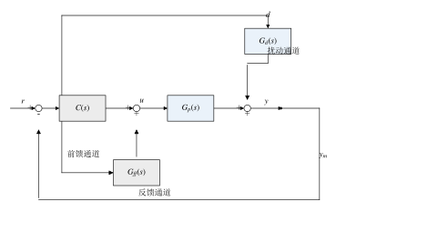
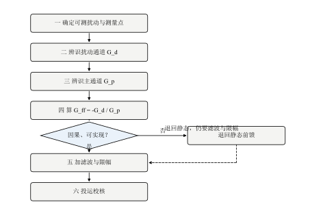
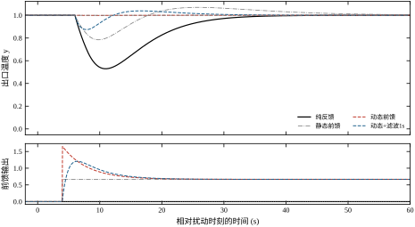
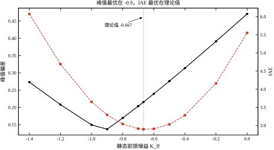
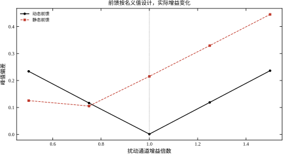
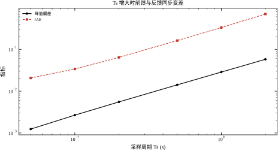
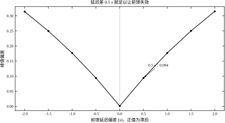
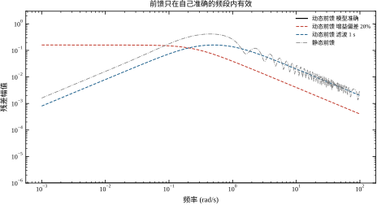
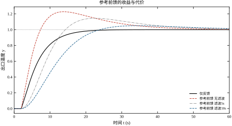
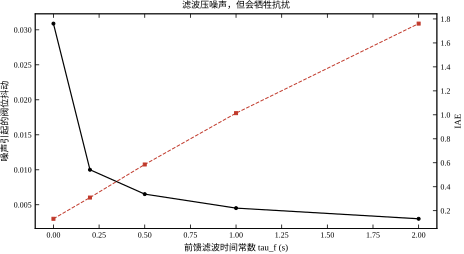

第 45 章的串级解决的是“扰动进入对象之后，用快回路把它尽早压住”。但它有一个前提：扰动本身不可测，只能等它对副变量产生影响后再反应。如果扰动其实是可以测量的，还有更早的一步可走——在扰动进入对象之前就动手。
考虑一台换热器：蒸汽流量阀开度 u 控制出口温度 y，入口物料温度 d 是主要扰动。入口温度突然下降 1\,^\circC，物料要走完管道、经过管壁传热，出口温度才开始下降；等温度变送器看到变化、控制器算出差值、阀门动作，扰动已经在对象里走了十几秒。反馈控制再快，也只能“事后补救”。
本章的算例把这件事量化。取主通道与扰动通道分别为
G_p(s)=\frac{1.2\,e^{-2s}}{10s+1},\qquad G_d(s)=\frac{0.8\,e^{-6s}}{4s+1}
扰动幅值 -1.0、t=40 s 加入阶跃，纯反馈的峰值偏差为 0.4706，恢复到 \pm2\% 带内要 31.65 s。若入口温度可以测量，前馈可以在同一时刻就给出一个反向的阀门动作，让扰动还没传到出口就被抵消掉。
反馈是“误差驱动”的：扰动先改变被控量，测量到误差，控制器才动作。这条链上有四段时间。
对象纯滞后。 本章主通道 2 s、扰动通道 6 s。也就是说，扰动从测量点走到出口要 6 s，而阀门动作走到出口只要 2 s——两者差 4 s。这 4 s 是前馈可以“抢”回来的时间。
对象惯性。 扰动通道时间常数 4 s、主通道 10 s，阶跃要走过几个时间常数才显现。
测量与采样。 变送器有滤波，DCS 有扫描周期，本章取 T_s=0.05 s，这一项相对前两项很小，但它决定了前馈的最短反应时间。
控制器运算。 常规 PID 一拍算完，可忽略。
四段加起来，反馈的“看见—动作”至少晚一个扰动通道的滞后加惯性。前馈不改变这四段时间，它改变的是起点：不等误差出现，直接根据扰动测量值算出该给多少控制量。
设前馈通道为 G_{ff}(s)，控制量由两部分相加：
u(s)=u_{fb}(s)+G_{ff}(s)\,d(s)
若暂时不管反馈（令 u_{fb}=0），被控量为
y(s)=\left[G_d(s)+G_p(s)G_{ff}(s)\right]d(s)
要让它对任意 d 都为零，只需
G_{ff}(s)=-\frac{G_d(s)}{G_p(s)} \tag{46-1}
这就是理想前馈。代入本章对象：
G_{ff}(s)=-\frac{0.8}{1.2}\cdot\frac{10s+1}{4s+1}\,e^{-4s} =-0.667\cdot\frac{10s+1}{4s+1}\,e^{-4s} \tag{46-2}
三个因子各有含义。负号表示“扰动使温度下降，前馈就让蒸汽阀开大”，方向相反；(10s+1)/(4s+1) 是超前-滞后环节，用来匹配两个通道的动态差异；e^{-4s} 表示要等 4 s 再动——扰动比控制作用多走 4 s，前馈若立刻动作，反而会早到 4 s 而帮倒忙（§46.6 会给出延迟差 0.5 s 就使前馈失效的数据）。
图 46-1 给出复合回路的信号关系。与第 45 章的串级相比，它多了一条从扰动测量直接到执行器的通路，少了“副变量”这一环。

图中有三个信号：扰动测量 d、前馈输出 u_{ff}、反馈输出 u_{fb}。执行器收到的是二者之和。三条通道的分工是：
前馈是开环的：它不看 y，因此不改变闭环特征方程，也就不改变稳定性（§46.2.4 严格说明）。代价是它的误差没有自我修正能力——模型错多少，残差就留多少，最后仍要靠反馈收尾。
误解一：有了前馈就不需要反馈。 前馈只对“可测且模型已知”的扰动有效。本章把扰动通道增益改小 20%（前馈仍按名义值设计），动态前馈的峰值偏差从 0.0012 涨到 0.1188，是原来的 99 倍；稳态偏差最终仍由反馈积分拉回零。前馈管动态峰值，反馈管稳态与模型误差，两者缺一不可。
误解二：前馈越复杂越好。 理想动态前馈把峰值压到 0.0012，但前馈输出峰值 1.654，是静态前馈 0.667 的 2.5 倍；若扰动测量有 \sigma=0.02 的噪声，动态前馈输出的抖动标准差 0.0309，静态前馈只有 0.0124。复杂前馈用执行器行程和噪声换来更小的峰值，是否划算要看阀门余量与测量品质（§46.9）。
误解三：静态前馈没什么用。 静态前馈只有一个增益，却把峰值从 0.4706 降到 0.2154，减少 54%，而且不放大噪声、不要求准确的动态模型。对大多数慢过程，静态前馈加反馈已经能拿到大部分收益，动态前馈是“锦上添花”而不是“必需”。
问题一，前馈通道怎么算、能不能实现？ 理想解 G_{ff}=-G_d/G_p 可能非因果、可能分子阶次高于分母，工程上要判断哪些部分能实现、哪些必须近似（§46.2–§46.3）。
问题二，模型不准、延迟对不齐时还剩多少收益？ 本章会给出增益偏差 \pm20\%、延迟偏差 \pm0.5 s 的定量结果，并说明为什么“前馈只在自己准确的频段内有效”（§46.4–§46.7）。
问题三，工程上怎么落地？ 滤波、限幅、无扰投切、模型在线校正，每一项都会影响前馈能不能长期用下去（§46.8–§46.11）。
本章路线与全书一致：先建立直观与数学（§46.1–§46.2），再给设计步骤与连续、离散结果（§46.3–§46.5），然后讨论稳定性、参数与整定（§46.6–§46.8），最后是改进、落地、边界与代码（§46.9–§46.12）。所有数字来自 code/ch046_sim.py 的实跑输出。
第 45 章的串级与本章的前馈常被拿来比较，因为二者解决的是同一类问题——把扰动挡在主被控量之外——但手段完全不同。
串级靠副回路。它把扰动进入的那条通道包进一个快速内环，扰动先影响副变量，内环在它传到主变量之前就把它压住。串级不要求知道扰动具体是什么，只要求存在一个能及时反映扰动的副变量，并且内环比外环快得多。
前馈靠测量。它直接量出扰动，按模型算出一个抵消量。前馈不引入新的闭环，因此不带来新的稳定性问题；但它要求扰动可测，而且测量必须早于扰动对输出的作用。
判据因此很清楚：
本章的换热器可以用一句话分清：蒸汽压力波动走串级，入口温度波动走本章的前馈。若把两者用反——用前馈去对付压力波动（压力测点噪声大、且与蒸汽流量构成不了副回路），或用串级去对付入口温度（入口温度没有可调的中间变量）——结构上都装得上，但性能与维护成本都会明显变差。
前馈的作用可以用一条时间线看清。本章扰动在 t_0=40 s 加入，扰动通道纯滞后 6 s，主通道纯滞后 2 s，前馈延迟 4 s。于是：
这条时间线是判断前馈参数对不对的最快方法：把 u_{ff} 与出口温度画在同一张趋势图上，若 u_{ff} 的起点比出口温度开始变化的时刻早 \tau_p，延迟就对了；早得太多说明 n_{ff} 偏小，晚得太多说明 n_{ff} 偏大。现场调试时，这一眼往往比算一遍传函更可靠（§46.8.4 会给出细扫方法）。
本章从头到尾用 G_p=1.2e^{-2s}/(10s+1)、G_d=0.8e^{-6s}/(4s+1) 这两条通道，但没有解释它们为什么长这样。理解这一点，才能判断换一台设备时参数该怎么估。
主通道是“蒸汽流量→出口温度”。蒸汽凝结放热，热量先传给管壁，再由管壁传给物料，两次热阻串联，宏观上表现为一个一阶惯性，时间常数 10 s 对应换热器与物料的热容。纯滞后 2 s 来自蒸汽阀到换热段的输送与混合时间。增益 1.2 的量纲是“单位阀门开度引起多少度”，取决于换热面积与蒸汽潜热。
扰动通道是“入口温度→出口温度”。物料带着热量直接流过去，不经过管壁，因此惯性小得多，时间常数 4 s；但入口温度的测点通常装在离换热器很远的上游管道上（为了抢出提前量），物料从测点走到出口要 6 s，所以纯滞后反而比主通道长。增益 0.8 小于 1，因为沿途有散热与混合，入口的 1 ℃ 波动传到出口已经衰减成 0.8 ℃。
两条通道的这三个差别不是巧合，而是一般规律：
由此可以推出一条工程判据：前馈可行性取决于“测点离扰动源近、离执行器远”。若把入口温度测点装在换热器出口附近，滞后差变成零甚至为负，前馈就失去了立足点。反过来，若测点在上游很远，时间窗很大，但测量滞后也随之增大（§46.3.9 的 \tau_m 预算），两者需要折中。
把图 46-1 写成方程。记设定值 r、被控量 y、可测扰动 d、控制量 u，反馈控制器 C(s)、主通道 G_p(s)、扰动通道 G_d(s)、前馈通道 G_{ff}(s)。执行器收到两路之和，前馈用的是扰动测量值（含噪声 n）：
u=u_{fb}+u_{ff},\qquad u_{fb}=C(s)\,[r-y],\qquad u_{ff}=G_{ff}(s)\,[d+n] \tag{46-3}
被控量是扰动通道与主通道的叠加：
y=G_d(s)\,d+G_p(s)\,u \tag{46-4}
把式 (46-3) 代入式 (46-4)，令 n=0（噪声单独在 §46.9 讨论），整理得
y=\frac{G_pC}{1+G_pC}\,r+\frac{G_d+G_pG_{ff}}{1+G_pC}\,d \tag{46-5}
式 (46-5) 是本章所有结论的出发点。它把输出分成两块：跟踪项只与 C、G_p 有关，扰动项则多了一个可以自由设计的 G_{ff}。注意分母 1+G_pC 里没有 G_{ff}——这一点在 §46.2.4 会展开，它是“前馈不影响稳定性”的全部原因。
要让扰动对输出完全没有影响，只需式 (46-5) 第二项的分子恒为零：
G_d(s)+G_p(s)G_{ff}(s)\equiv 0 \tag{46-6}
式 (46-6) 称为绝对不变性条件。它的解就是式 (46-1) 的 G_{ff}=-G_d/G_p。这里换一个角度看：不变性是一个关于 s 的多项式恒等式，要求两个通道在所有频率上幅值相等、相位相反。只要模型有一点点偏差，恒等式就不成立，只能做到“在某个频段内接近成立”。这解释了为什么工程上前馈永远与反馈配对使用。
式 (46-6) 还有一个容易忽略的含义：前馈抵消的是通道之差，不是扰动本身。前馈并不“知道”扰动有多大，它只是让主通道产生一个与扰动通道等大反向的输出。因此扰动测量一旦有偏，前馈就会按同样的比例产生错误动作。
把本章对象代入式 (46-1)：
G_{ff}(s)=-\frac{K_d}{K_p}\cdot\frac{T_p s+1}{T_d s+1}\,e^{-(\tau_d-\tau_p)s} =-0.667\cdot\frac{10s+1}{4s+1}\,e^{-4s} \tag{46-7}
一个传递函数要在实时系统里实现，必须满足两个条件。
因果性。 式 (46-7) 含 e^{-(\tau_d-\tau_p)s}，指数为负才能用缓冲区延迟实现。要求
\tau_d\ge\tau_p \tag{46-8}
本章 \tau_d-\tau_p=6-2=4 s，可以做成 4 s 的纯延迟。反之，若扰动通道比主通道快（\tau_d<\tau_p），理想前馈需要 e^{+(\tau_p-\tau_d)s}，即“预知未来”，物理上不可实现。这时只能退而求其次：删掉超前项做静态前馈，或把扰动测量点前移，让测量真正提前。
真性（relative degree）。 式 (46-7) 的分子、分母同阶，是 proper 的，可以直接用超前-滞后环节实现。一般地，要求
\deg D_d-\deg N_d\ \ge\ \deg D_p-\deg N_p \tag{46-9}
即扰动通道的相对阶不低于主通道。若不满足，G_{ff} 的分子阶次高于分母，需要理想微分；工程上用带滤波的近似微分代替，代价是高频段残差变大。
本章两项都满足，理论上可以做到峰值 0.0012（相对扰动幅值 1.0 仅 0.12%）。这不是“前馈特别好”，而是“这个算例的通道结构刚好允许绝对不变性”。
式 (46-5) 的两项共用分母 1+G_pC。也就是说，闭环极点由 1+G_pC=0 决定，与 G_{ff} 无关。前馈只改变扰动项的分子，相当于给扰动通道加了一对零点。
这条结论有三个直接推论。
第一，前馈不能把一个不稳定的反馈回路救回来。若 1+G_pC 有右半平面根，无论 G_{ff} 怎么设计，扰动响应都会发散。
第二，前馈也不会破坏一个稳定的回路。在线性范围内，加入前馈后增益裕度、相位裕度、穿越频率都不变。§46.6 会用实测裕度验证这一点。
第三，一旦进入非线性（前馈输出限幅、阀门饱和），这条结论就失效。本章实测：不限幅时峰值 0.0012，前馈限到 [0,1.0] 后峰值升到 0.1066，限到 [0,0.3] 后升到 0.3520——此时前馈已经退化成“半开环”，残差全部压给反馈。所以“前馈不影响稳定性”这句话必须加上“线性、不限幅”的前提。
令 s\to0，式 (46-7) 中惯性项趋于 1、延迟项趋于 1：
K_{ff}=G_{ff}(0)=-\frac{K_d}{K_p}=-\frac{0.8}{1.2}=-0.667 \tag{46-10}
只取这个常数的前馈叫静态前馈，它满足的是稳态不变性：扰动过去很久、系统稳定后，输出回到设定值，前馈不需要积分器也能做到无静差。
代价是动态过程完全没有补偿。静态前馈的残差为
E_{\text{stat}}(s)=G_d(s)+K_{ff}G_p(s) =K_d\left[\frac{e^{-6s}}{4s+1}-\frac{e^{-2s}}{10s+1}\right] \tag{46-11}
低频时两项几乎抵消（\omega=0.01 rad/s 处残差 0.01612），频率升高后相位差拉开，残差迅速变大：\omega=0.249 处 0.35953，\omega=0.497 处 0.41361。这就是静态前馈“只能压低峰值、压不到零”的数学原因。
定义残差通道
E(s)=G_d(s)+G_{ff}(s)G_p(s) \tag{46-12}
它就是式 (46-5) 中扰动项的分子，也是前馈“没抵消掉的部分”。两种常见失配有简洁的解析形式。
增益失配。 设实际前馈是理想值的 \kappa 倍，即 G_{ff,a}=\kappa G_{ff}，则
E(s)=(1-\kappa)\,G_d(s) \tag{46-13}
残差形状与扰动通道完全相同，只差一个比例。本章 \kappa=0.8 时，|E| 在低频为 0.2\times0.8=0.16，实测 0.15987；到 \omega=0.992 rad/s 降为 0.03909，因为 |G_d| 本身随频率衰减。\kappa=1.2 时残差为 0.2|G_d|，与 \kappa=0.8 完全对称——实测两组数字逐点相同，说明增益失配的方向不改变残差大小，只改变符号。
静态前馈。 残差即式 (46-11)。低频很小、中频最大、高频又回落，形状不是单调的。这提示一件事：静态前馈的有效频段在低频，动态前馈的有效频段可以推到中频。若扰动主要是慢漂移，静态前馈足够；若扰动含快速成分，必须补动态环节。
有了 E(s)，复合回路的扰动响应可以写成
\frac{y(s)}{d(s)}=\frac{E(s)}{1+G_p(s)C(s)} \tag{46-14}
前馈把“扰动 → 输出”的分子从 G_d 换成 E，剩下的仍由反馈的灵敏度函数收尾。这也说明前馈与反馈不是竞争关系，而是串联在同一根分子上的两级衰减。
把式 (46-5) 改写成标准形式：
y=T(s)\,r+S(s)\,E(s)\,d,\qquad T=\frac{G_pC}{1+G_pC},\quad S=\frac{1}{1+G_pC} \tag{46-15}
T 是补灵敏度函数，S 是灵敏度函数。反馈控制器 C 同时决定 T 与 S，二者被 S+T=1 绑死——想加快跟踪就必然放大某些频段的扰动。前馈在 S 的分子上乘了一个 E(s)，等于在不改变 S 的前提下单独压低扰动通道。这就是“二自由度”的确切含义：一个自由度（C）定回路形状，另一个（G_{ff}）定扰动抑制。
参考前馈是同一思想的另一用法：从设定值而不是扰动引出一条前馈，
u_r=\frac{1}{K_p}\,r \tag{46-16}
它让执行器在误差出现之前就先给出稳态所需的开度，跟踪因此变快。但式 (46-16) 是纯比例、无延迟匹配的，本章实测无滤波时超调 22.72%，执行器峰值 2.273；把设定值经 10 s 一阶滤波后再送入，超调降到 5.01%，峰值 1.022。参考前馈的收益与冲击是同一枚硬币的两面，滤波就是在两者之间取平衡（§46.7）。
工程实现时，式 (46-7) 要拆成三块：增益 -0.667、超前-滞后 (10s+1)/(4s+1)、纯延迟 e^{-4s}。
增益直接乘；超前-滞后用 Tustin 或零极点匹配离散；纯延迟在 T_s=0.05 s 下就是 80 拍的环形缓冲区。三块都不难，难的是三块必须同步：延迟少一拍、超前-滞后系数差一点，残差就会从 0 升到可观测的量级。
本章实测了采样周期的影响：T_s 从 0.05 s 增到 2 s，峰值从 0.0012 升到 0.0578，IAE 从 0.0206 升到 0.6989。采样越慢，延迟量化的误差越大（80 拍变成 2 拍），前馈的动作时刻越粗。这条曲线是 §46.5 的主题。
前馈不是唯一利用模型抵消扰动的办法。扰动观测器走的是另一条路：先用主通道的名义模型算出“这点控制量本应产生多少输出”，再与实际输出相减，把差值归因于一个等效扰动，然后反向补偿。前馈是由因推果——看到扰动，按模型算它的影响；观测器是由果推因——看到偏差，按模型反推扰动的等效大小。
两者的模型需求不同。前馈需要扰动通道与主通道的开环模型 G_d、G_p，两个都要准；观测器主要需要主通道的名义模型，并要求它可逆。前馈的模型误差原样进入残差；观测器的误差被反馈闭合，有自我修正的成分，但它必须等偏差出现才能估计，时间上天然晚一步。
可实现性的困难也相似。观测器求逆时，若名义模型相对阶较高，逆是非真的，必须加低通滤波截断高频——这与本章给前馈加 \tau_f 是同一个交易：用带宽换可实现性。滤波越宽，估计越快、噪声越大；越窄，越平滑、越迟钝。
有一条判据值得记住：扰动可测且测量足够早，用前馈；扰动不可测或测点太晚，才考虑观测器或纯反馈。观测器的性能上限由模型精度与滤波带宽共同决定，它无法突破“偏差出现之后才能动作”这一条，本质上更接近“带模型预测的反馈”。
还有一处本质差别。前馈只看 d、不看 y，所以式 (46-5) 的分母里没有 G_{ff}，闭环极点不变；观测器用了 y，它属于反馈，会改变闭环极点，滤波设计不当还会吃掉裕度。这也是工程上“能测就做前馈、测不到才做观测器”的顺序由来。
式 (46-12) 把残差写成 E(s)=G_d+G_{ff}G_p，式 (46-13) 又把它拆成 G_d(1-e^{-\Delta s}) 这样的形式。§46.4 用极值算峰值，§46.6 用 \lvert E(j\omega)\rvert 画幅频，看起来是两套方法，其实是同一个量的两个投影。
时域里，残差对阶跃扰动的响应是 E(s)/s 的拉氏反变换，峰值就是这条曲线的最大值。频域里，\lvert E(j\omega)\rvert 描述的是“每个频率成分被残留多少”。两者通过阶跃的频谱 1/(j\omega) 联系：低频段决定拖尾，中频段决定峰值。这也解释了为什么静态前馈的峰值降了一半、拖尾反而变长（§46.4.2）——它在低频段补得准，在中频段补不准。
延迟误差是理解这个联系的最好例子。设前馈的延迟偏差为 \Delta t，则
E(j\omega)=G_d(j\omega)\left(1-e^{-j\omega\Delta t}\right),\qquad \lvert 1-e^{-j\omega\Delta t}\rvert=2\left\lvert\sin\frac{\omega\Delta t}{2}\right\rvert
在低频（\omega\Delta t\ll1）时，这个因子近似等于 \omega\Delta t，残差随频率线性上升——这就是“高通形状”的来历。频率越高残留越多，但 G_d 本身在高频衰减，两者相乘后在某个中频处达到最大。
用这组式子可以解释表 46-7 里那个看似矛盾的现象：延迟差 0.5 s 时峰值放大 78 倍，IAE 只放大 22 倍。峰值由中频段的最大残留决定，那里 \omega\Delta t 已接近 1，放大倍数大；IAE 是对时间的积分，等效于按 1/\omega 加权，低频权重更大，而低频段 \omega\Delta t 很小，放大倍数自然小。同一个残差，峰值看最坏频段，IAE 看全频段平均。
实用上，这套对应关系给了一个省事的判断法：调参数时先看 \lvert E(j\omega)\rvert 的曲线（不用跑时域仿真，几行代码就能画），确认残差在扰动的主要频段内是否被压住；再用时域仿真验证峰值与 IAE。前者快，后者真，两者互相校验，比只看其中一个可靠。
至此数学准备完成：式 (46-6) 给出目标，式 (46-8)(46-9) 给出可行性判据，式 (46-12) 给出误差的度量，式 (46-15) 给出与反馈的分工。§46.3 把这些变成可执行的设计步骤。
把 §46.2 的结论变成工程动作，可以分成六步（图 46-2）。前两步是“能不能做”，中间两步是“做哪一种”，后两步是“做得对不对”。

图 46-2 右侧有一条回到“静态前馈”的支路。它对应最常见的情形：动态模型辨识不出来、或者扰动测量噪声太大，此时不要硬上动态前馈，退回静态前馈加反馈，收益仍有 50% 左右（§46.4）。设计流程要有退路，这是与前馈“开环、无自校正”的本质相匹配的。
表 46-1 把六步的输入、输出与本章取值列在一起，后文逐条展开。
| 步骤 | 要回答的问题 | 输入 | 输出 | 本章取值 |
|---|---|---|---|---|
| 一 可行性 | 扰动可测吗？来得及吗？ | 测量点位置、变送器滞后 | 是否继续 | \tau_m\ll4 s，继续 |
| 二 辨识 | 两条通道各是什么？ | 阶跃试验数据 | K_p,T_p,\tau_p,K_d,T_d,\tau_d | 1.2,10,2,0.8,4,6 |
| 三 静态 | 稳态该补多少？ | 两个增益 | K_{ff} | -0.667 |
| 四 选型 | 要静态还是动态？ | 扰动频谱、残差要求 | 结构 | 动态 |
| 五 动态 | 超前-滞后、延迟、滤波取多少？ | 四个时间常数 | T_1,T_2,\tau_{ff},\tau_f | 10,4,4,1 |
| 六 投切 | 怎么上线、怎么验收？ | 限幅、切换逻辑 | 可投运的前馈 | [0,1.0]，斜坡投入 |
表 46-1 前馈设计六步的输入、输出与本章取值
可测是前提，但“可测”不等于“可用”。前馈要抢的是 \Delta\tau=\tau_d-\tau_p 这段时间，本章为 4 s。如果扰动测量本身要经过 3 s 的取样管、5 s 的分析仪滞后，那么等前馈算出结果，扰动早已到达出口，前馈就变成了“迟到的反馈”。
工程判据可以写得很朴素：测量链路的总滞后（取样 + 变送 + 滤波 + 扫描）应小于 \Delta\tau 的三分之一。本章 4 s 的窗口对应 1.3 s 的测量预算，普通热电偶加 0.5 s 滤波可以满足；气相色谱这类分钟级滞后的测量则完全不可用。
还有一条容易被忽略：测量点必须位于扰动向被控量传播的路径上游。换热器里测入口物料温度可以，测出口管壁温度就没有意义——那时扰动已经作用完了。位置错了，后面的模型再准也没用。
前馈需要的是两条通道的比值，不是各自的绝对精度。这一点降低了辨识难度：只要两次阶跃试验在同一工况、同一负荷下做，增益的公共偏差会在比值里抵消一部分。
本章的辨识结果直接取自对象参数：主通道 K_p=1.2、T_p=10 s、\tau_p=2 s；扰动通道 K_d=0.8、T_d=4 s、\tau_d=6 s。阶跃响应两点法即可读出这四个数：取响应达到稳态值 63.2% 与 28.3% 的时刻，两者之差给出时间常数，外推给出纯滞后。现场若有噪声，多做几次取中位数比做一次精细拟合更可靠。
辨识要记录三件事：试验时的负荷、阀门开度、以及两条通道的增益符号。符号错了，前馈会从“抵消”变成“加倍”，这是投运阶段最危险的低级错误。本章 K_p>0、K_d>0，故 K_{ff}<0：扰动使温度下降时，前馈要让阀门开大。
不要一上来就做动态前馈。静态前馈只需要两个增益，当天就能算出来、当天就能投：
K_{ff}=-\frac{K_d}{K_p}=-\frac{0.8}{1.2}=-0.667 \tag{46-17}
本章实测，单加这一项，扰动峰值从 0.4706 降到 0.2154，降幅 54.2%；IAE 从 5.5520 降到 2.8975，降幅 47.8%。用两个常数换一半的扰动抑制，这是全书性价比最高的一处改进。
但要注意一个反直觉现象：恢复时间从 31.65 s 延长到 44.95 s。原因是静态前馈把响应曲线从“高而窄”压成“低而宽”——峰值下来了，可拖尾变长，进入 \pm2\% 带反而更晚。这说明峰值、IAE、恢复时间是三个不同口径，不能只看一个。若工艺指标是“最大偏差不超限”，静态前馈很合适；若指标是“尽快回到带内”，它可能帮倒忙。§46.7 会专门讨论这三个口径的取舍。
判断依据是扰动的主要频率成分落在残差的哪个频段。静态前馈的残差（式 46-11）在 \omega=0.01 rad/s 处只有 0.01612，到 0.249 rad/s 已涨到 0.35953，接近扰动通道本身的低频幅值 0.8 的一半。
换算成时间尺度：\omega=0.01 rad/s 对应 628 s 的周期，\omega=0.25 rad/s 对应 25 s。也就是说，静态前馈能对付“几分钟才变一次”的慢漂移，对付不了“几十秒一个起伏”的扰动。本章的阶跃扰动含有丰富的快变成分，因此动态前馈才有 0.0012 对 0.2154 的巨大差距。
现场可按三条问：
动态前馈在静态增益之外再加三件东西：超前-滞后、纯延迟、以及一个可选的滤波。
超前-滞后由两条通道的时间常数决定：
\frac{T_1s+1}{T_2s+1}=\frac{T_ps+1}{T_ds+1}=\frac{10s+1}{4s+1} \tag{46-18}
分子时间常数取主通道、分母取扰动通道。物理含义是：扰动通道快（T_d=4 s）、主通道慢（T_p=10 s），前馈必须“先冲一下再收”，才能在动态上匹配。取反等于把快慢关系弄反，前馈的形状与两条通道之差不再相消，收益会明显缩水。
纯延迟取 \tau_{ff}=\tau_d-\tau_p=4 s，T_s=0.05 s 下为 80 拍。这一项对精度最敏感：偏差 0.5 s 峰值就从 0.0012 升到 0.0938，偏差 2 s 升到 0.3138，已经接近静态前馈的水平（§46.6 有完整数据）。
滤波 \tau_f 是工程上的折中。本章扰动测量叠加 \sigma=0.02 噪声时，不加滤波的前馈输出抖动标准差 0.0309，\tau_f=0.5 s 降到 0.0065，\tau_f=2 s 降到 0.0030。代价是峰值从 0.0012 升到 0.1256（\tau_f=1 s）再到 0.1957（\tau_f=2 s）。本章推荐 \tau_f 取 \Delta\tau 的 1/8 到 1/4，即 0.5–1 s。
前馈是开环通道，投切必须无扰。做法是：投运前先让前馈输出跟踪当前稳态值（把 u_{ff} 初始化成 K_{ff}\cdot d_0，d_0 为当前扰动测量），再以 10–20 s 的斜坡把前馈从“跟随即刻值”过渡到“正常运算”，避免切换瞬间给阀门一个阶跃。
验收建议用四个指标，缺一不可：
| 指标 | 含义 | 本章目标值 | 实测 |
|---|---|---|---|
| 峰值降幅 | 相对纯反馈的峰值减少比例 | ≥ 50% | 99.7%（动态）、54.2%（静态） |
| IAE 降幅 | 全过程偏差积分减少比例 | ≥ 40% | 99.6%（动态）、47.8%（静态） |
| 前馈峰值 | 是否超出阀门余量 | ≤ 阀门可用行程 | 1.654（需 1.7 倍余量） |
| 噪声抖动 | 静默段前馈输出的标准差 | ≤ 量程 2% | 0.0045（\tau_f=1 s） |
表 46-2 前馈投运的四项验收指标
四项里最容易失守的是第三项。动态前馈的峰值 1.654 是静态值 0.667 的 2.5 倍，若阀门只剩 1.0 的行程，前馈会在最需要它的时刻被限幅卡住。本章实测限到 [0,1.0] 后峰值回到 0.1066，收益从 99.7% 掉到 77.3%；限到 [0,0.7] 就基本等于静态前馈（0.2153）。先算阀门余量，再决定要不要动态前馈，顺序不能反。
把六步压缩成一张投运前必须逐项打勾的清单：
这十条里，第 3、5、6 条决定前馈“有没有用”，第 8、9 条决定前馈“能不能长期用”。前者靠数学，后者靠工程纪律。
六步流程的第一步是“确认扰动可测”，但“可测”只是门槛，选哪个变量做前馈，对最终效果的影响比参数整定大得多。三条标准按优先级排列。
第一，要早于输出到达。 前馈的全部价值来自时间差 \tau_d-\tau_p，本章是 4 s。若测量环节自身滞后 \tau_m（热电偶套管、取样管线、分析仪预处理），可用时间窗缩成 \tau_d-\tau_p-\tau_m。经验上要求 \tau_m<(\tau_d-\tau_p)/3，即本章不超过 1.3 s；超过这个数，前馈的动作时刻被推到扰动到达之后，收益迅速消失。工程上换一支细套管热电偶、把取样点前移，往往比调参数有效。
第二，要对输出的贡献显著。 前馈只能抵消它测量的那一路。若某变量波动大但对出口温度影响很小（K_d 小），做前馈的收益低于维护成本。判断方法是算稳态贡献 K_d\Delta d 与总允许偏差的比值，超过 30% 才值得单独做一路。
第三，测量要有代表性。 单点测温可能落在混合不均的位置；换热器入口温度若分层，应取多点平均或装在混合器之后。测量没有代表性，前馈会按一个局部值去补偿整个截面，误差无法通过整定消除。
多个扰动都显著时，处理顺序是：先做贡献最大的那一路，验收后再加第二路。多路前馈的结构是各自独立的前馈块，输出在同一个求和点相加，各自限幅、各自滤波。不要图省事把几路信号先加权合成一个“等效扰动”——除非它们的动态确实相同（例如同一股物流的流量与温度可按热负荷 F\Delta T 合成），否则合成会引入额外的模型误差。
最后一条容易忽略：不要用被控量的下游信号做前馈。例如用出口温度之后的回水温度做前馈，那个信号已经包含了控制作用，等于把反馈绕了一圈接进前馈，闭环特性会被悄悄改掉，§46.2.4 的“不进特征方程”也就不再成立。
把纯反馈、静态前馈、动态前馈、动态前馈加一阶滤波四条曲线画在同一张图上（图 46-3），差别一眼可见。

图 46-3 上半幅是输出，下半幅是前馈输出。四条曲线的形状可以这样概括：
四条曲线的指标列在表 46-3。注意“恢复”一列：动态前馈为 0，因为它从未越过 \pm2\% 带；静态前馈的 44.95 s 比纯反馈还长，这不是数据错误，而是“低而宽”曲线的必然结果。
| 方案 | 峰值偏差 | IAE | 恢复时间/s | 前馈峰值 |
|---|---|---|---|---|
| 纯反馈 | 0.4706 | 5.5520 | 31.65 | 0 |
| 静态前馈 | 0.2154 | 2.8975 | 44.95 | 0.667 |
| 动态前馈 | 0.0012 | 0.0206 | 0 | 1.654 |
| 动态 + 滤波 1 s | 0.1256 | 0.9243 | 23.70 | 1.207 |
| 动态 + 滤波 2 s | 0.1957 | 1.7013 | 29.20 | 1.035 |
表 46-3 四种方案与两种滤波的扰动响应（扰动 -1.0，t_0=40 s）
表 46-3 里最值得琢磨的是“动态 + 滤波 2 s”这一行：峰值 0.1957 与静态前馈的 0.2154 相差无几，但 IAE 只有 1.7013，比静态前馈的 2.8975 小 41%，恢复时间也短 15 s。峰值相同不等于性能相同，滤波后的动态前馈在拖尾段仍然比静态前馈更贴合扰动通道。这说明选方案时至少要同时看峰值与 IAE 两个口径。
静态前馈的残差可以算得很干净。扰动与主通道的延迟已经由 4 s 的前馈延迟对齐，此后扰动通道的输出是 -0.8(1-e^{-t/4})，前馈经主通道产生的补偿是 +0.8(1-e^{-t/10})，两者相加：
e(t)=0.8\left(e^{-t/10}-e^{-t/4}\right),\qquad t\ge0 \tag{46-19}
两个指数项的稳态值相同，所以 t\to\infty 时残差为零——这正是稳态不变性。但在中间过程，慢的 e^{-t/10} 还没衰减完，快的 e^{-t/4} 已经掉下去了，差值先增后减。
对式 (46-19) 求极值：令导数为零，得 0.25e^{-t/4}=0.1e^{-t/10}，解出 t^\ast=6.1 s，代回得 |e|_{\max}=0.262。本章闭环实测峰值 0.2154，比开环估算小 18%，差额由反馈在 6 s 内已经动作提供。静态前馈的极限就是这 0.26 的“形状差”，再怎么调增益也消不掉，因为它是两个不同时间常数的差，不是一个比例问题。
这段推导也解释了为什么静态前馈的恢复时间会变长：式 (46-19) 的拖尾是 0.8e^{-t/10}，时间常数 10 s，比扰动通道的 4 s 慢得多。峰值被削掉一半，拖尾却换成了更慢的指数，进入 \pm2\% 带的时刻自然推后。
把静态增益从 -1.2 扫到 0，得到图 46-4。两条曲线的极小点不在同一位置，这是本章最值得记住的一张图。

峰值曲线在 K_{ff}=-0.9 处最低（0.1370），而 IAE 曲线在 K_{ff}=-0.667 处最低（2.8975）。理论稳态值给的是 IAE 最优，不是峰值最优。原因还是式 (46-19)：多补一点（|K_{ff}| 更大）会让前馈的“冲劲”超过扰动，在峰值段形成反向偏差，把正向峰压得更低；但多补的部分在拖尾段要由反馈反向拉回，IAE 因此变大。
表 46-4 摘了八个点。可以清楚看到：K_{ff} 从 -0.667 加到 -0.9，峰值降 36%，IAE 升 14%；继续加到 -1.2，峰值反弹到 0.2081，IAE 升到 4.6923。过补偿有一个最优点，过了就开始两头受损。
| K_{ff} | 峰值 | IAE | 恢复/s |
|---|---|---|---|
| -1.2 | 0.2081 | 4.6923 | 51.30 |
| -1.0 | 0.1494 | 3.6531 | 49.40 |
| -0.9 | 0.1370 | 3.2900 | 48.25 |
| -0.8 | 0.1695 | 3.0415 | 47.00 |
| -0.667 | 0.2154 | 2.8975 | 44.95 |
| -0.5 | 0.2760 | 3.0301 | 41.40 |
| -0.2 | 0.3911 | 4.1627 | 26.15 |
| 0 | 0.4706 | 5.5520 | 31.65 |
表 46-4 静态前馈增益扫描（真值 -0.667）
恢复时间一列更说明问题：它从 -1.2 的 51.30 s 单调降到 -0.2 的 26.15 s，随后在 K_{ff}=0 处又回升到 31.65 s。三个指标给出三个不同的“最优”，工程上必须事先声明用哪个口径验收，否则调试时会陷入“怎么调都有人说不行”的循环。
对本章对象，建议仍取 K_{ff}=-0.667。理由不是它峰值最低，而是它对应稳态不变性，模型漂移时偏差方向可预期；靠过补偿压峰值，等于把系统的鲁棒余量换成一次性的指标好看。
动态前馈的 0.0012 依赖模型准确。把扰动通道增益按 0.5,0.75,1.0,1.25,1.5 倍变化（前馈仍按名义值设计），得到图 46-5。

设扰动通道实际增益是名义值的 \kappa 倍、前馈仍按名义值设计，则残差为 (\kappa-1)G_d，幅值与式 (46-13) 的 |1-\kappa||G_d| 相同。峰值应随 |1-\kappa| 线性增长。实测峰值 0.2342、0.1165、0.0012、0.1188、0.2365，与 |1-\kappa|=0.5,0.25,0,0.25,0.5 基本成比例：残差减半，峰值也减半。两端的细微不对称（0.2342 对 0.2365，差约 1%）来自扰动加入前基线未完全稳恒与峰值取样点的离散化，可视为对称。
这里有一个很实用的结论：增益误差 50% 时，动态前馈的峰值 0.2342 已经不如静态前馈的 0.2154。也就是说，动态前馈的高精度是一次“全有或全无”的红利——模型准，收益是数量级的；模型差一半，连静态前馈都不如，还要多承担 2.5 倍的阀门行程和噪声放大。投运前必须问一句：这条扰动通道的增益，我能保证在 ±10% 以内吗？
IAE 的对称性更好：0.5 倍与 1.5 倍分别为 2.7824 与 2.7754，差 0.25%。这说明积分型指标对失配方向不敏感，适合做长期趋势监控；峰值对失配幅值敏感，适合做报警限设计。
把本节收拢成三句话。
第一，静态前馈的收益有上限。上限由两条通道时间常数之差决定，本章为 0.26，实测峰值 0.2154，已经接近这个上限。想再往下压，只能引入动态环节。
第二，增益的选择取决于验收口径。峰值、IAE、恢复时间三个最优值分别是 -0.9、-0.667、-0.2，彼此不重合。工程上应取稳态值 -0.667，把峰值指标让给动态环节去解决，而不是靠过补偿硬压。
第三，动态前馈对模型精度的要求是陡峭的。增益误差 25% 时峰值 0.1165，误差 50% 时 0.2342，后者已不如静态前馈。这决定了 §46.10 要用在线校正来维持模型精度，也决定了 §46.11 要把“模型可维护性”列为适用边界的第一条。
以上都是连续域结论。实际系统按 T_s=0.05 s 采样，延迟要量化成整数拍，超前-滞后要离散化，这些会带来额外的性能损失，是 §46.5 的主题。
绝对不变性在理论上要求峰值严格为零，实测是 0.0012，为扰动幅值的 0.12%。这个数字值得拆开看，因为它决定了“还能不能更好”。
残差有三个来源。第一是采样离散化：前馈的延迟、超前-滞后都在离散域实现，输出在 T_s 内保持常值，等效于给通道加了约 T_s/2 的附加滞后，与连续域的精确反相不再重合。第二是前馈与反馈的叠加：前馈按测量值算，反馈按 y 算，两者在同一个求和点相加，反馈的微小动作会破坏前馈的精确抵消。第三才是参数误差：K_{ff}、T_1/T_2、n_{ff} 都按名义值取，与仿真对象的真值之间有舍入差。
三者中哪一项主导，表 46-5 已经给了答案：T_s 从 0.05 s 增到 2 s，峰值从 0.0012 涨到 0.0578，放大 48 倍，而模型参数一个都没动。这说明 0.0012 主要是数值残差，不是设计残差。设计残差要看增益失配那一组数据：增益差 25% 就是 0.1165，比 0.0012 大两个数量级。
这个区分有实际意义。追求 0.001 量级的峰值没有工程价值：本章 \sigma=0.02 的测量噪声，即使加了 1 s 滤波，前馈输出本身仍有 0.0045 的抖动（表 46-2），比 0.0012 大一个数量级；阀门的分辨率、定位器的死区也都远大于此。动态前馈做得好不好，应该用 0.05 与 0.2 两条线来判断——0.05 以内视为理想，0.2 左右视为与静态前馈相当，超过 0.25 说明动态环节没有起到作用，应回头查延迟与时间常数，而不是继续微调增益。
本章所有实验都用扰动 -1.0。读者自然会问：如果扰动是 -2.0 或 -0.5，前面这些数字还成立吗？
在无限幅、无饱和的理想条件下，结论按比例缩放。 对象是线性的、PI 是线性的、前馈通道（超前-滞后加延迟）也是线性的，三者串联仍是线性系统。扰动幅值乘 2，输出偏差、IAE、前馈输出峰值都乘 2，而降幅百分比不变：扰动 -2.0 时，纯反馈峰值应为 0.9412、静态前馈 0.4308、动态前馈 0.0024，与 -1.0 时的 0.4706、0.2154、0.0012 严格成二倍关系。这也是为什么正文用“降幅”而不是“绝对值”来比较方案——降幅是线性系统的无量纲指标，可以跨工况引用。
但绝对量不能这样推。前馈输出峰值 1.654 是按扰动 -1.0 算的；若最大扰动是 -2.0，前馈需要 3.3 的行程，阀门必须留出这么多余量。§46.3.7 的第三条验收指标（前馈峰值不超过阀门可用行程）必须按最大可能扰动校核，而不是按试验时用的那一个。
限幅一旦起作用，线性就不再成立。本章限到 [0,1.0] 时峰值 0.1066；若扰动加倍，前馈需求远超限幅，实际能提供的补偿仍是 1.0，相对补偿量减半，峰值会明显高于“0.1066 的两倍”。这种“扰动越大、前馈相对越弱”的特性，是限幅前馈的固有非线性，验收时应专门测一组不同幅值的扰动，画出“峰值—扰动幅值”曲线，看它在哪个幅值开始弯折（弯折点就是限幅开始起作用的点）。
实践上有两条用法。第一，验收试验从小扰动起步，逐级加倍，直到设计幅值，每级都记录峰值；若某级开始偏离线性，说明限幅或阀门速率已经介入。第二，报警限按最大扰动设计，不要按试验扰动设计：本章的动态前馈在 -1.0 时几乎完美，操作员容易误以为“任何扰动都没问题”，实际大幅扰动时它会退回限幅状态，行为接近静态前馈。
连续域的式 (46-7) 在 DCS 里由三段代码实现：一个乘法、一个二阶差分方程、一个环形缓冲区。三者必须在同一个任务、同一个采样时刻执行，否则前馈内部就会出现拍级错位。
本章代码的顺序是：先读扰动测量 d_k，延迟 80 拍得到 d_{ff,k}，送超前-滞后得到 u_{ff,k}，同时用同一拍的 y_k 算反馈 u_{fb,k}，两者相加后输出。这个顺序保证前馈与反馈看到的是同一时刻的世界。若把前馈放在另一个扫描周期更慢的任务里，等效于给前馈额外加了半个到一个采样周期的滞后，§46.4 的延迟敏感性会立刻体现出来。
纯延迟在离散域最自然：
n_{ff}=\operatorname{round}\!\left(\frac{\tau_d-\tau_p}{T_s}\right) =\operatorname{round}\!\left(\frac{4}{0.05}\right)=80 \tag{46-20}
80 拍就是 80 个浮点数的环形缓冲区，内存开销可以忽略。取整带来的延迟误差不超过 T_s/2，本章 T_s=0.05 s 时为 25 ms，相对 4 s 只有 0.6%，可以忽略。
需要注意两点。第一，不要用小数延迟插值。线性插值本质是一个低通滤波器，会额外引入相位滞后，把好不容易对齐的 4 s 又拖回去；整数拍加取整是更干净的做法。第二，n_{ff} 必须由两个延迟分别取整后相减，而不是先算差值再取整：
n_{ff}=\operatorname{round}\!\left(\frac{\tau_d}{T_s}\right) -\operatorname{round}\!\left(\frac{\tau_p}{T_s}\right) \tag{46-21}
两种算法在本章都得到 120−40=80，但当 \tau_p 不是 T_s 的整数倍时，式 (46-21) 才与“两条通道各自延迟”的物理事实一致。
代码用零阶保持（ZOH）离散，因为它对分段常值输入是精确的，且与执行器的实际行为一致。对
G(s)=K\frac{T_1s+1}{T_2s+1},\qquad K=-0.667,\ T_1=10,\ T_2=4 \tag{46-22}
ZOH 离散后有
G(z)=\frac{b_0+b_1z^{-1}}{1+a_1z^{-1}},\qquad a_1=-e^{-T_s/T_2}=-0.98758 \tag{46-23}
b_0=K\frac{T_1}{T_2}=-1.6667,\qquad b_1=-K\left(a_1+\frac{T_1}{T_2}-1\right)=1.6584 \tag{46-24}
注意 b_0 的物理含义：它是前馈在扰动阶跃瞬间的跳变幅值，等于静态增益乘时间常数比 T_1/T_2=2.5。本章实测前馈峰值 1.654，与解析值 1.667 只差 0.8%，差额来自采样与反馈的微小作用。这条关系很好用：看到 u_{ff} 的峰值，就能反推 T_1/T_2 有没有取错。
离散化还有两个必须核对的地方。直流增益：把 z=1 代入式 (46-23)，应得 K=-0.667；若系数舍入后偏差超过 1%，稳态不变性就被破坏。极点位置：a_1=-0.98758 对应 z=0.98758，反算时间常数 -T_s/\ln0.98758=4.00 s，与 T_2 一致。这两项核对花不了一分钟，却能挡住大部分手工离散的低级错误。
也可以改用 Tustin，系数为 b_0=2.4907、b_1=-2.4783、a_1=-0.98758（未乘增益）。Tustin 在低频段与连续域吻合更好，但高频段会翘尾；对前馈这种工作在低频的通道，两种方法差别很小，选哪种取决于组态软件现成的功能块。
把 T_s 从 0.05 s 逐步放大到 2 s，其余参数不变，得到图 46-8。

| T_s/s | 峰值 | IAE | 恢复/s |
|---|---|---|---|
| 0.05 | 0.0012 | 0.0206 | 0 |
| 0.10 | 0.0027 | 0.0339 | 0 |
| 0.20 | 0.0055 | 0.0643 | 0 |
| 0.50 | 0.0142 | 0.1620 | 0 |
| 1.00 | 0.0287 | 0.3320 | 14.0 |
| 2.00 | 0.0578 | 0.6989 | 16.0 |
表 46-5 采样周期对动态前馈性能的影响（扰动 -1.0）
峰值从 0.0012 增到 0.0578，放大了 48 倍；IAE 从 0.0206 增到 0.6989，放大约 34 倍。这个退化不是延迟量化造成的——本章的 4 s 在六个采样周期下都能被整除，n_{ff} 分别为 80、40、20、8、4、2 拍，没有取整误差。退化来自两个机制。
零阶保持的相位滞后。 前馈输出在 T_s 内保持不变，等效于给通道加了约 T_s/2 的平均延迟。T_s=2 s 时，在 \omega=0.5 rad/s 处额外滞后约 0.5 rad，即 29°，足以让原本精确反相的补偿变得不对齐。
测量与控制的阶梯化。 扰动测量每 T_s 才更新一次，前馈的“先冲一下”被拉成阶梯；反馈 PI 也同步变慢，闭环带宽下降，残差收尾更慢。两项叠加，才有了 48 倍的峰值退化。
但要把这张表读对：即使 T_s=2 s，峰值 0.0578 仍只有静态前馈 0.2154 的 27%，IAE 0.6989 也只有 2.8975 的 24%。采样慢不会让前馈失效，只是把它从“几乎完美”降到“仍明显优于静态”。真正致命的是延迟对不准（§46.6）和模型失配（§46.4），而不是采样周期。
从工程角度，T_s 的选择应由闭环带宽决定，而不是由前馈决定。本章 PI 闭环的上升时间约 10 s，取 T_s=0.05 s 是每上升时间 200 拍，余量很大；现场常见 0.5–1 s 的扫描周期，对应的峰值约 0.014–0.029，完全够用。
第一，延迟用整数拍，且按式 (46-21) 分别取整。不要用插值延迟，那会引入额外低通。
第二，超前-滞后核对直流增益与极点。z=1 处增益必须等于 K_{ff}，极点反算的时间常数必须等于 T_2。
第三，前馈与反馈同拍计算。放在同一个控制任务里，用同一个时间戳；跨任务传递要带时间标签，不能让前馈“看旧数据”。
第四，系数用双精度或至少 32 位浮点。a_1=-0.98758 离单位圆很近，定点数舍入会明显改变极点位置；现场的组态软件多用浮点，这一条通常自动满足，但移植到嵌入式平台时要专门核对。
这四条都不涉及控制理论，却决定了 §46.4 的连续域结论能不能在 DCS 里复现。工程上“理论对、投运不对”的案例，多半栽在这类细节上。
§46.5.4 说 T_s 应按闭环带宽选，这里补一条来自前馈的约束：T_s 还要受延迟预算限制。
式 (46-21) 的两个取整各自带来不超过 T_s/2 的误差，最坏情况叠加为 T_s。本章 \tau_p=2 s、\tau_d=6 s 都恰好是 T_s=0.05 s 的整数倍，量化误差为零，这是算例偏理想的地方。换成 T_s=0.3 s，n_p=\mathrm{round}(6.67)=7（2.1 s）、n_d=\mathrm{round}(20)=20（6.0 s），延迟差变成 3.9 s，误差 -0.1 s；换成 T_s=0.9 s，n_p=2（1.8 s）、n_d=7（6.3 s），延迟差 4.5 s，误差 +0.5 s——已经等于 §46.6.2 里“抹掉大半收益”的那个阈值。
若把 §46.6.4 的工程容差（延迟误差不超过 0.2 s）当作硬指标，则 T_s\le0.2 s。现场常见的 0.5–1 s 扫描周期恰好做不到这一点：量化误差 0.5–1 s，与前馈的全部时间窗 4 s 相比占 12%–25%，动态前馈很难达到 0.05 的峰值。这类装置要么提高扫描频率（把前馈放在快速任务里），要么退回静态前馈——静态前馈不依赖延迟精度，只依赖增益比。
还有一处需要说明。式 (46-21) 是“分别取整再相减”，另一种写法是“先算延迟差再取整”，两者在不能整除时最多差一拍。前者与两条通道各自被离散的物理事实一致，后者直接最小化前馈的时刻误差。工程上不必在这半拍上纠结：实际延迟本身就有辨识误差，按式 (46-21) 算出初值，再用 §46.8.4 的细扫修正，比在纸面上争半拍有效得多。
初学者常担心“前馈会不会算不过来”。把这笔账算一遍，结论恰好相反：计算量是这个回路里最不重要的一环。
一阶超前-滞后的差分方程每拍只需要两次乘法、两次加法（b_0d_k+b_1d_{k-1}-a_1u_{k-1}）；纯延迟是一次数组取址；一阶滤波两次乘加；限幅两次比较；再加大约十次，一拍之内全部完成。存储上，80 拍的延迟缓冲区是 80 个浮点数，约 320 字节；加上几个状态变量，不到 1 KB。
对比一下：T_s=0.05 s 意味着 50 ms 内要算完，现代 DCS 的一个控制任务能在这段时间里执行上千个类似的块；即便用 8 位单片机，几十次浮点运算是微秒量级。前馈从来不是被算力卡住的。
真正卡住工程实现的是另外三件事。第一是时序：前馈必须与反馈在同一拍、用同一时间戳计算（§46.5.1），跨任务或跨网络传递会引入几十毫秒的抖动，比计算时间长一个数量级。第二是数据质量：坏值、冻结、超时（§46.10.7）比运算本身更容易出错，而且错得更隐蔽。第三是数值精度：a_1=-0.98758 离单位圆很近，定点数舍入会改变极点位置（§46.5.5 第四条）。
所以组态时不必在前馈块上省资源，反而应该给它足够的字长、独立的采样任务和完整的数据质量判断。省下来的那点运算时间，换不来任何性能；省掉的时序保证，却会让前面所有的分析失效。
离散化之后，下一步要回答的是：前馈加进来，闭环还稳不稳？裕度变不变？这是 §46.6 的主题。
§46.2.4 已经证明前馈不进特征方程，这里把数字补上。回路传递函数为
L(s)=C(s)G_p(s)=1.2\left(1+\frac{1}{10s}\right)\cdot\frac{1.2\,e^{-2s}}{10s+1} \tag{46-25}
在 10^{-3} 到 10 rad/s 的网格上逐点计算 L(j\omega)，得到增益穿越频率 \omega_c=0.1441 rad/s、相位裕度 73.49^\circ，相位穿越频率 \omega_{180}=0.7847 rad/s、增益裕度 14.73 dB。这两个数字与第 45 章整定 PI 时看到的量级一致：相位裕度七十多度，属于“偏保守但很稳”的配置。
关键在于：式 (46-25) 里没有 G_{ff}。不论前馈取静态、动态、加不加滤波，L(s) 都不变，因此 \omega_c、PM、GM 一个数字都不会动。代码第十二段没有对四种方案分别算裕度，因为算了也是同一组数——这不是偷懒，而是结构决定的。
同一段代码还打印了两种配置的跟踪指标：纯反馈与动态前馈都是 Mp 0.00%、t_r 10.068 s、t_s 19.750 s，逐位相同。原因是扰动为 0 时前馈输出恒为 0，前馈通道根本不参与设定值响应。这从另一个侧面说明：前馈是扰动通道上的并联支路，不是反馈回路的一部分。
把前馈延迟在标称 4 s 上下拨动，其余参数不变，得到图 46-6。

| 延迟偏差/s | 峰值 | IAE |
|---|---|---|
| -2.0 | 0.3138 | 1.8519 |
| -1.0 | 0.1764 | 0.9272 |
| -0.5 | 0.0938 | 0.4603 |
| 0 | 0.0012 | 0.0206 |
| +0.5 | 0.0939 | 0.4833 |
| +1.0 | 0.1769 | 0.9514 |
| +2.0 | 0.3147 | 1.8769 |
表 46-6 前馈延迟偏差对性能的影响（标称 4 s）
正负偏差几乎对称，这与 §46.4 的增益失配一致：残差只与偏差的幅值有关。偏差 0.5 s 时峰值 0.0938，是理想值的 78 倍；偏差 2 s 时 0.3138，已经不如静态前馈的 0.2154。换句话说，延迟错 2 s，动态前馈就白做了。
这个结果有干净的解析解释。设实际延迟比标称多 \Delta，则实际前馈为 G_{ff}e^{-\Delta s}，残差为
E(s)=G_d+G_{ff}e^{-\Delta s}G_p=G_d\left(1-e^{-\Delta s}\right) \tag{46-26}
在频域，|1-e^{-j\omega\Delta}|=2|\sin(\omega\Delta/2)|\approx\omega\Delta（小 \omega\Delta 时）。这是一个高通形状：直流处为零，频率越高残差越大。所以延迟误差不破坏稳态，专门破坏动态峰值——这正好解释了为什么峰值放大 78 倍，IAE 只放大 22 倍。
式 (46-26) 还给出一个工程推论：前馈补偿的频段越高，对延迟精度的要求越严。若只想补偿 \omega<0.05 rad/s 的慢漂移，0.5 s 的延迟误差只带来 0.05\times0.5=2.5\% 的残差；若要补偿到 0.5 rad/s，同样的误差就是 25%。这决定了动态前馈必须先把延迟核准，再谈超前-滞后。
图 46-10 把三种情况的残差幅频曲线画在一起。

三条曲线对应三种失效模式，形状完全不同。
模型准确（实线）：全频段残差为 0，图上贴着 10^{-6} 的下限。这是理想情况，只在仿真里成立。
增益偏差（虚线）：\kappa=0.8 与 \kappa=1.2 两条曲线重合，低频 0.15987，随频率缓慢下降，\omega=0.992 处 0.03909。按式 (46-13)，残差是 0.2|G_d|，形状就是扰动通道的幅频特性——一个 4 s 惯性环节，转折频率 0.25 rad/s，之后按 -20 dB/dec 衰减。
静态前馈（点线）：低频 0.01612，\omega=0.101 处 0.17849，\omega=0.497 处达到 0.41361，之后回落到 0.26264。它不是单调曲线，因为式 (46-11) 是两个不同极点、不同延迟的环节之差，幅值与相位都在变。
三条曲线放在一起，可以读出“有效频段”的确切含义。若以残差 0.1 为界：
这个结论比“动态前馈更好”精确得多：动态前馈的优点是残差形状平坦，缺点是残差下限由模型精度决定。静态前馈相反，残差在低频可以很小，但随频率迅速上升。选择哪一种，取决于扰动的主要频率落在哪里，以及模型能做到多准。
把本章测过的失配放在一张表里，可以看清哪一项最要命。
| 失配类型 | 失配量 | 峰值 | 相对理想倍数 |
|---|---|---|---|
| 无 | 0 | 0.0012 | 1 |
| 增益偏低 | 25% | 0.1165 | 97 |
| 增益偏低 | 50% | 0.2342 | 195 |
| 延迟偏大 | 0.5 s | 0.0938 | 78 |
| 延迟偏大 | 1.0 s | 0.1769 | 147 |
| 一阶滤波 | 1 s | 0.1256 | 105 |
| 前馈限幅 | [0,1.0] | 0.1066 | 89 |
| 前馈限幅 | [0,0.7] | 0.2153 | 179 |
表 46-7 四类失配的峰值对比（理想值 0.0012）
按相对失配量归一化，延迟最敏感：4 s 的 12.5%（0.5 s）就造成 78 倍退化；增益 25% 造成 97 倍，二者量级相当；滤波 1 s 造成 105 倍；限幅到 1.0（约 60% 行程）造成 89 倍。没有哪一项可以忽略，但延迟最容易在投运时被低估——它不像增益那样能从稳态数据反推，必须单独做延迟辨识。
由此给出本章的工程容差建议：延迟误差不超过 0.2 s（5%），增益误差不超过 10%，滤波时间常数不超过 1 s，前馈限幅不低于 1.7（即静态值的 2.5 倍）。四项同时满足，峰值才可能控制在 0.2 以内，与静态前馈相当或更好；任何一项超差，动态前馈的收益都会被抹掉大半。
裕度不变，不等于投运时不用做稳定性检查。原因有两个。
第一，限幅会把线性结论打破。前馈限到 [0,0.7] 后峰值 0.2153，与静态前馈持平，此时前馈通道实际上处于“长期饱和”，其行为接近开环，回路对扰动的抑制能力退回到纯反馈加一个常数偏置。验收时要专门做“限幅边界”试验：把扰动加大到前馈刚好饱和，观察输出是否出现持续振荡。
第二，执行器速率是新的约束。本章前馈的初始跳变 b_0=1.667，在 T_s=0.05 s 内完成，等效阀门速度 33/s。实际调节阀全行程时间通常 10–60 s，根本跟不上。阀门跟不上，前馈的“先冲一下”就被削成斜坡，等效于额外加了滞后，§46.6.2 的延迟敏感性立刻出现。这就是为什么工程上必须给前馈加滤波或速率限制，也是 §46.7 要把 \tau_f 作为独立参数讨论的原因。
验收顺序建议是：先在前馈手动状态下测回路阶跃，确认 PM/GM 与设计值一致；再以小扰动投入前馈，逐级加大到设计幅值，每级观察阀门是否跟得上、输出是否单调回落；最后做限幅边界试验。三步都通过，才能认为“前馈不影响稳定性”这句话在本装置上成立。
性能的上限已经清楚：模型精度定残差下限，延迟精度定峰值，执行器速率定前馈能有多“陡”。下一节把这些参数逐个拆开，说明它们各自改变曲线的哪一段。
本章的单回路仿真假设扰动只影响这一个回路。真实装置里，前馈把扰动“抵消”的方式是让执行器多走一段行程，这段行程本身会作用到别处。
最典型的耦合路径是公用工程。前馈检测到入口温度下降，立刻开大蒸汽阀；蒸汽总管的压降随之增大，同一总管上的另一台换热器蒸汽流量减少，出口温度开始下降。对那台换热器来说，扰动不是“入口温度”，而是“总管压力”，而它的前馈测不到。于是前馈把原来只影响一个回路的小扰动，放大成了影响一片装置的大扰动。
这类问题不能靠调参数解决，只能靠结构。三条常用措施：
还有一条更隐蔽的耦合：前馈输出进入执行器后，若执行器是分程控制或与其他回路共用，前馈的跳变会在另一条支路上产生反向跳变。这类问题在 P&ID 上就能看出来，不需要仿真，但需要有人在投运前认真看一遍。
前馈抵消的是扰动对某一个输出的影响，不是扰动本身。 能量与物料仍然要经过装置，只是换了一条路径。把这句话记住，就不会指望前馈“把问题消灭”，而会去问“问题被搬到了哪里”。
表 46-7 给的是单项失配的峰值。投运时四项误差同时存在，需要回答一个更实际的问题：预算怎么分。
先定总目标。若要求动态前馈的峰值不超过 0.2（与静态前馈相当），相当于理想值 0.0012 的 167 倍。四项单项失配的倍数分别是：延迟 0.5 s 为 78 倍、增益 25% 为 97 倍、滤波 1 s 为 105 倍、限幅到 1.0 为 89 倍——每一项单独都在预算内，但没有一项留出了足够余量给其他项。
不能简单相加。78+97+105+89 远超 167，但这个加法假设四项误差的峰值在同一时刻叠加，实际不会：延迟误差造成的峰值出现在补偿到达后的最初几秒，滤波造成的峰值出现在补偿的上升沿，增益误差造成的偏差则贯穿全过程。峰值是取最大值，不是求和。
工程上可行的分配方法是把误差分成两类：
两类误差的峰值很少同时出现，因此可以分别给预算。建议的时刻类总预算为峰值的 1/2（约 0.1），幅值类总预算为 1/3（约 0.067），剩下 1/6 留给未建模因素（阀门非线性、测量滞后、采样）。
按这个分配反推单项容差：延迟按 0.2 s、滤波按 0.5 s、执行器速率不低于前馈跳变的 1/5；增益按 10%，限幅不低于 1.7。用表 46-7 的倍数近似线性外推，0.2 s 延迟约对应 31 倍（0.037）、10% 增益约对应 39 倍（0.047）、0.5 s 滤波约对应 50 倍（0.06），三类各自都只占预算的一半左右，留出了余量。
这组数字是按本章对象的实测数据外推的，不是通用标准；换一台设备，应先做一遍单项扫描，再按同样的方法分配。但方法本身通用：先定总目标，再按“峰值是否同时出现”分类，最后反推单项容差。直接把总目标平均分给四项，往往会导致最敏感的那一项超差而不自知。
前馈-反馈复合回路有七个可调量，它们不是并列关系，而是各自负责响应曲线的一段。表 46-8 先给全貌。
| 参数 | 符号 | 本章值 | 主要影响 | 失配后果 |
|---|---|---|---|---|
| 静态增益 | K_{ff} | -0.667 | 稳态与低频残差下限 | 误差 50% 峰值 0.2342 |
| 超前时间 | T_1 | 10 s | 中频相位超前量 | 形状不匹配 |
| 滞后时间 | T_2 | 4 s | 中频相位滞后量 | 形状不匹配 |
| 前馈延迟 | \tau_{ff} | 4 s | 补偿与扰动的时间对齐 | 偏差 0.5 s 峰值 78 倍 |
| 滤波时间 | \tau_f | 0–1 s | 高频噪声与动作陡度 | 1 s 峰值 0.1256 |
| 前馈限幅 | [u_{lo},u_{hi}] | [0,1.0] | 执行器保护 | 限到 0.7 退化到静态水平 |
| 反馈参数 | K_c,T_i | 1.2 / 10 s | 残差收尾速度与裕度 | 见 §46.7.7 |
表 46-8 复合回路的七个可调量
读这张表的正确方式是“从后往前”：先看限幅与反馈，因为它们决定前馈能不能安全地用；再看延迟与增益，因为它们决定前馈有没有用；最后看 T_1,T_2 与 \tau_f，它们只决定前馈用得“顺不顺”。顺序反了，就会在细节上耗掉大部分调试时间。
K_{ff} 是唯一一个能直接从稳态数据算出来的参数，也是唯一一个错了会立即在稳态上暴露的参数。它的理想值 -K_d/K_p=-0.667 对应稳态不变性；偏离它，稳态会出现一个与扰动成比例的固定偏差，由反馈积分慢慢消掉。
但 §46.4 的扫描表明，K_{ff} 的作用不止稳态：从 -0.667 加到 -0.9，峰值还能降 36%。所以这个参数实际上同时管“稳态补多少”和“峰值压多低”两件事，只是两个目标的最优点不重合。
工程上取 -0.667，理由是它对应可解释的物理量（两个增益之比），模型变化时偏差方向可预测。若工艺明确要求压峰值、且能接受更大的拖尾，可以取 -0.8 到 -0.9；再大就进入“两头受损”区，没有意义。
T_1 与 T_2 单独看没有意义，起作用的是它们的比值和绝对大小。比值决定初始跳变：
\frac{b_0}{K_{ff}}=\frac{T_1}{T_2}=2.5 \tag{46-27}
本章前馈在扰动阶跃瞬间的理论跳变为 1.667（实测峰值 1.654），就是这个比值造成的。比值越大，前馈“冲”得越猛，对阀门速率要求越高；比值越小，前馈越平缓，但动态匹配越差。
绝对大小决定补偿的时间尺度。T_1=10 s、T_2=4 s 对应两条通道的惯性；若现场辨识出的时间常数是 20 s 与 8 s，比值仍是 2.5，但补偿过程整体拉长一倍，滤波与限幅也要跟着放大。比值管形状，绝对值管尺度，调参时不要把两者混在一起。
一个常见错误是把 T_1 与 T_2 取反。取反后比值变成 0.4，前馈在阶跃瞬间只跳到 0.267，随后缓慢爬升，完全跟不上扰动的快速上升段；此时即使增益准确，峰值也会明显高于静态前馈。
延迟是七个参数里唯一“不能用增益补偿”的。增益错了可以调 K_{ff}，滤波大了可以减小 \tau_f，延迟错了只能重新辨识或改测量点。
它的影响形状由式 (46-26) 决定：残差正比于 |1-e^{-j\omega\Delta}|，是一个随频率上升的高通。这意味着延迟误差专门破坏高频补偿，对稳态几乎无影响。本章 0.5 s 误差使峰值放大 78 倍，却只让 IAE 放大 22 倍，就是这个原因。
现场辨识延迟的可靠办法是双通道阶跃试验：同时记录扰动测量与输出，分别数出两次响应开始变化的时刻，差值就是 \tau_d-\tau_p。不要用“阀门动作到输出变化”的单一试验去推，那条路径只给出 \tau_p，推不出 \tau_d。
\tau_f 是噪声与峰值之间的旋钮。本章在扰动测量上叠加 \sigma=0.02 的噪声，结果如表 46-9。
| \tau_f/s | std(u_{ff}) | \lvert u_{ff}\rvert_{\max} | IAE |
|---|---|---|---|
| 0 | 0.0309 | 1.644 | 0.1325 |
| 0.2 | 0.0100 | 1.488 | 0.3096 |
| 0.5 | 0.0065 | 1.351 | 0.5856 |
| 1.0 | 0.0045 | 1.218 | 1.0140 |
| 2.0 | 0.0030 | 1.035 | 1.7612 |
表 46-9 前馈滤波对噪声与性能的影响（\sigma=0.02）
噪声标准差从 0.0309 降到 0.0030，改善 10 倍；IAE 从 0.1325 升到 1.7612，恶化 13 倍。这是一条典型的“用性能换平稳”的曲线，没有免费的中间点。
选择 \tau_f 的依据是噪声引起的阀门抖动是否可接受。若阀门定位器对 0.03 的指令抖动不敏感，\tau_f=0 最好；若有明显抖动或定位器频繁动作，取 0.5–1 s，牺牲一部分峰值换设备寿命。本章推荐 1 s，对应 std 0.0045、峰值 0.1256，仍在静态前馈之上。
限幅不是控制参数，是保护参数。它的取值应由执行器余量决定，而不是由前馈的理想峰值决定。本章的理想峰值 1.654，若阀门只剩 1.0 的行程，就必须限到 1.0。
| 限幅 | 峰值 | IAE | 恢复/s |
|---|---|---|---|
| 不限 | 0.0012 | 0.0206 | 0 |
| [0,1.0] | 0.1066 | 1.0224 | 28.00 |
| [0,0.7] | 0.2153 | 2.8957 | 44.90 |
| [0,0.5] | 0.2760 | 3.0301 | 41.40 |
| [0,0.3] | 0.3520 | 3.6574 | 23.75 |
表 46-10 前馈输出限幅的影响
限到 0.7 时峰值 0.2153，与静态前馈的 0.2154 几乎相同——这不是巧合：0.7 刚好等于静态前馈的稳态输出 0.667，动态前馈的“超前”部分被完全削掉，只剩下静态分量。限幅值低于静态输出，等于把动态前馈退化成静态前馈，这是选限幅时的一个实用判据。
限到 0.5 与 0.3 时峰值反而上升、恢复时间却缩短，因为深度限幅让前馈变成一个“短促的脉冲”，削掉了拖尾。这种形状对峰值不利、对恢复有利，一般不应作为设计目标，只在阀门严重受限时被动接受。
前馈把大头抵消后，剩下的残差由反馈收尾。反馈越快，残差消得越快；但反馈太快会吃掉稳定裕度。本章扫了 K_c 与 T_i，结果如表 46-11。
| K_c | T_i/s | 纯反馈峰值 | 复合峰值 | 纯反馈 IAE | 复合 IAE |
|---|---|---|---|---|---|
| 0.6 | 10 | 0.5165 | 0.0391 | 9.4796 | 1.9006 |
| 0.9 | 10 | 0.4962 | 0.0045 | 7.2344 | 0.2200 |
| 1.2 | 10 | 0.4706 | 0.0012 | 5.5520 | 0.0206 |
| 1.5 | 10 | 0.4500 | 0.0014 | 4.4481 | 0.0144 |
| 1.8 | 10 | 0.4344 | 0.0013 | 3.7061 | 0.0131 |
| 1.2 | 5 | 0.4508 | 0.0125 | 5.1339 | 0.6301 |
| 1.2 | 20 | 0.4470 | 0.0776 | 7.0153 | 3.0887 |
表 46-11 反馈 PI 参数与前馈的配合（动态前馈按名义模型）
这张表最有价值的一列是“复合峰值”。K_c 从 0.6 增到 1.2，纯反馈峰值只从 0.5165 降到 0.4706，变化 9%；复合峰值却从 0.0391 降到 0.0012，变化 30 倍。原因很简单：前馈抵消后剩下的残差很小，反馈的每一次动作都直接作用在这点残差上，增益高低被放大。
T_i 的影响更明显：T_i=20 s 时复合峰值 0.0776，是 T_i=5 s 时 0.0125 的 6 倍。积分慢，残差停留久，峰值自然高。但 T_i 也不是越短越好：T_i=5 s 时 K_i 翻倍，反馈会对前馈残留的微小误差过度反应，复合 IAE 反而从 0.0206 升到 0.6301。本章的最优点就在 10 s 附近。
但不能反过来推“前馈投运后可以把 K_c 调很大”。K_c 从 1.2 增到 1.8，复合峰值只从 0.0012 变到 0.0013，几乎没有收益，相位裕度却从 73.49° 降到 65.24°。前馈不改变裕度，也不替反馈承担稳定性责任；反馈参数应按回路裕度整定，而不是按复合峰值整定。
参考前馈的参数是 \tau_r，作用与扰动前馈的 \tau_f 类似，但权衡的对象不同：这里换的是“跟踪速度”与“超调/执行器冲击”。
| 方案 | Mp/% | t_r/s | t_s/s | \lvert u\rvert_{\max} |
|---|---|---|---|---|
| 仅反馈 | 0.00 | 10.068 | 19.750 | 1.440 |
| 参考前馈 无滤波 | 22.72 | 4.044 | 43.700 | 2.273 |
| 参考前馈 2 s | 21.13 | 5.405 | 45.950 | 1.813 |
| 参考前馈 5 s | 14.44 | 8.256 | 50.200 | 1.360 |
| 参考前馈 10 s | 5.01 | 13.876 | 54.700 | 1.022 |
| 参考前馈 20 s | 0.01 | 31.798 | 63.800 | 0.833 |
表 46-12 参考前馈与设定值滤波的权衡
这张表给出的结论有点扫兴：参考前馈把上升时间从 10.068 s 缩短到 4.044 s，代价是 22.72% 的超调和 2.273 的执行器峰值；把滤波加到 10 s，超调降到 5.01%，但上升时间反而比纯反馈慢；加到 20 s，超调没了，上升时间却是纯反馈的 3 倍。
也就是说，本章这个对象并不需要参考前馈。PI 本身已经给出零超调、10 s 上升时间的响应，参考前馈只能在“更快”与“更稳”之间搬家，搬完还不如原来。参考前馈真正有价值的场合是：设定值频繁大幅变化、执行器余量充足、且工艺更看重跟踪速度而非超调。三条不同时满足，就不要加。
参数讲完，接下来是整定顺序：七个参数先调哪个、后调哪个、每步看什么曲线。这是 §46.8 的内容。
K_{ff}、T_1/T_2、T_2 这三个参数在式 (46-23)(46-24) 里是耦合的：b_0=K_{ff}T_1/T_2 同时含增益与时间常数比，a_1=-e^{-T_s/T_2} 只含 T_2。耦合看起来麻烦，反过来却给了一个很好的诊断工具：前馈自己的输出曲线上，三段形状分别对应三个参数。
三段可分离，意味着现场可以只凭一条前馈输出趋势反推三个参数有没有取错。这比重新做一次双通道辨识省事得多，也是 §46.10.6 要把 u_{ff}/d 作为长期监控量的原因。
需要提醒的是，三段可分离只在扰动是阶跃时成立。若扰动是斜坡或脉冲，跳变段与稳态段混在一起，读数会失真。现场验证参数时，应尽量找一次真实的阶跃扰动（例如切泵、切换原料罐），或在前馈手动状态下人为制造一个小阶跃。
增益误差用百分比表示，延迟误差用秒表示，滤波误差用时间常数表示——三个量纲不同，无法直接比较谁更严重。本章的实测数据恰好可以把它们折算到同一个尺度：等效峰值。
先看增益。扰动通道增益偏差 \kappa 时，峰值 0.2342（\kappa=0.5）、0.1165（\kappa=0.25）、0.0012（\kappa=0），三者与 0.4706\lvert1-\kappa\rvert 几乎完全吻合（0.4706\times0.5=0.2353，0.4706\times0.25=0.1177）。也就是说：
\text{峰值}\approx 0.4706\times\lvert\text{相对增益误差}\rvert
系数 0.4706 正是纯反馈的峰值。物理含义很清楚：前馈完全失效时，系统退化为纯反馈；前馈部分失效时，剩下的残差按“失效比例”从纯反馈峰值往下降。增益误差 30%，等于把前馈的收益退回 70% 的纯反馈水平。
再看延迟。0.5 s 偏差给出 0.0938，1.0 s 给出 0.1769，换算成“等效增益误差”分别是 0.0938/0.4706=20\% 与 0.1769/0.4706=38\%。线性拟合给出一个很好记的近似：
\text{等效增益误差}\approx 0.4\times\Delta t\ (\text{s})
即每 1 s 的延迟误差，相当于 40% 的增益误差。这条换算在本章对象上成立（\Delta t 在 0.5–1 s 范围内），换对象需要重测，但量级可以借用。
折算之后，容差分配就有了统一语言。§46.6.7 建议延迟 0.2 s、增益 10%，用这条换算看，0.2 s 相当于 8% 的增益误差，与 10% 的增益容差基本等重——两项被分配了相近的预算，这与“延迟更敏感”的直觉一致，也说明那组容差不是随手定的。
两类误差同时存在时，不能直接把等效值相加。延迟误差的残差与增益误差的残差在时间上错开、在相位上不同，保守估计可用平方和开方：\sqrt{0.08^2+0.10^2}=12.8\%，仍低于“把前馈收益退回 87%”的水平。这个估算方法给出的是保守上界，够用来判断“当前误差水平下前馈还值不值得留”。
前馈整定最容易犯的错误是“一上来就调动态参数”。正确顺序由四条原则决定。
先手动，后自动。 整定反馈时把前馈切手动、输出置零，先得到一条干净的纯反馈基线。本章基线是峰值 0.4706、IAE 5.5520、恢复 31.65 s。没有这条基线，后面所有“改善百分比”都无从谈起。
先静态，后动态。 静态前馈只有两个增益，投运当天就能验证符号和量级；动态前馈有四个参数，任何一个错了都会掩盖其他错误。先用静态把“方向对不对”确认掉，再上动态。
先延迟，后形状。 延迟误差的残差是高通，会污染整个动态段；形状参数（T_1,T_2）的误差是低通，主要影响中频。先对齐时间，再修形状，否则调 T_1 时看到的改善可能只是延迟碰巧对了一点。
先安全，后性能。 限幅与滤波决定前馈能不能安全地用，应该在追求峰值之前定下来。反过来做，往往是把峰值调到 0.001，投运第一天就因为阀门饱和被打回原形。
反馈是兜底，必须先独立可用。本章取 K_c=1.2、T_i=10 s，对应相位裕度 73.49°、增益裕度 14.73 dB。这个裕度偏保守，但对前馈有利：前馈的残差要靠反馈收尾，反馈越稳，残差收得越干净。
整定目标建议设在相位裕度 60°–75°。低于 60°，前馈残差容易激发振荡；高于 75°，反馈太慢，残差拖尾长，复合 IAE 反而大。本章 73.49° 在上沿，是因为对象纯滞后 2 s，留够余量更稳妥。
这一步不要追求“纯反馈的峰值最小”。纯反馈峰值从 K_c=0.6 的 0.5165 到 K_c=1.8 的 0.4344，只差 16%，而裕度掉了 16.5°。用裕度换这点峰值不划算，峰值应该交给前馈去压。
静态前馈投运前做三个检查，每个都有明确的通过标准。
符号检查。 手动给扰动测量加一个正偏置，观察前馈输出方向：本章 K_{ff}<0，扰动增大时前馈应减小。符号错了，前馈会从“抵消”变成“加倍”，峰值成倍上升，一眼就能看出来。
量级检查。 用稳态数据核对 u_{ff}=K_{ff}\cdot d。本章扰动 -1.0 时前馈应为 +0.667；若现场读到 0.3 或 1.3，说明增益比算错或测量有标度问题。
稳态检查。 投入静态前馈，等扰动稳定后看输出是否回到设定值。若稳态有固定偏差，说明 K_{ff} 与真实的 K_d/K_p 不符，或者反馈积分被限幅卡住。
三项通过后，峰值应从 0.4706 降到 0.2154 附近。若降幅不到 30%，不要急着上动态，先查测量点位置和延迟——静态前馈都拿不到一半收益，动态前馈也不会凭空变好。
延迟是唯一必须“扫”出来的参数。解析值 4 s 只是起点，现场要按拍细扫。
做法是：从解析值 n_{ff}=80 开始，依次取 78、79、80、81、82 拍，每拍记录峰值。本章的粗扫结果呈明显的 V 形：偏差 0.5 s（10 拍）峰值 0.0938，偏差 0 时 0.0012。用 V 形底部三个点做抛物线拟合，可以把对齐精度推到 \pm0.05 s，即一拍以内。
两个判据决定细扫是否可信。V 形要尖：若底部很平，说明前馈的其他参数（增益或 T_1/T_2）有明显误差，先修那些，再回来扫延迟。最小值要低：若扫遍所有拍，峰值最低仍高于 0.05，说明模型结构不对（例如扰动通道不是一阶），此时继续调延迟没有意义。
细扫时要用同一段扰动数据反复回放，不要每次重新做阶跃试验。现场的负荷波动会让两次试验不可比，把延迟的 0.05 s 差异淹没在噪声里。
T_1 与 T_2 来自辨识，原则上不应大改。现场允许的修正幅度是 ±20%，超过这个范围应先怀疑辨识数据。
微调时看两个特征。峰值段由 T_1/T_2 的比值决定：峰值偏高，说明前馈“冲”得不够，可略增 T_1；峰值出现反向过冲，说明冲过头，略减 T_1。拖尾段由 T_2 的绝对值决定：拖尾长，略减 T_2 让前馈收得更快；拖尾出现振荡，略增 T_2。
两条要一起看。只调 T_1 会把比值带偏，只调 T_2 会把时间尺度带偏。经验做法是保持比值不变、整体缩放，先确认形状对不对，再确认尺度对不对。
一个反例：现场看到峰值高，就把 T_1 从 10 s 加到 20 s，比值变成 5，前馈初始跳变从 1.667 涨到 3.33，阀门直接饱和，峰值反而更高。形状参数的调整必须受执行器余量约束，这是 §46.7.6 限幅讨论的延续。
正确顺序是先定限幅，再定滤波。原因：限幅改变的是前馈的有效形状，滤波改变的是前馈的平滑度，前者对峰值的影响更大。先把限幅定在阀门可用行程，再在剩余空间里用滤波换平稳。
本章单独测过两项：限幅 [0,1.0] 使峰值从 0.0012 退到 0.1066；单独加 1 s 滤波使峰值升到 0.1256、噪声 std 从 0.0309 降到 0.0045。两项叠加后的峰值不能简单相加，要在限幅值确定后重新实测一次。
反过来做——先加滤波把峰值调到 0.1256，再发现阀门只能到 1.0，限幅与滤波的联合效果还得重测——等于白走一遍。顺序错了，返工是必然的。
前馈投运后要复核反馈，但复核的口径是“复合 IAE”，不是“复合峰值”。
本章数据：K_c 在 1.2–1.5 之间复合 IAE 分别为 0.0206 与 0.0144，差别很小；K_c=0.6 时升到 1.9006，明显变差。T_i 在 10 s 时复合 IAE 0.0206，5 s 时 0.6301，20 s 时 3.0887，最优点明确。
复核的结论通常是“反馈不用大改”。前馈已经把大头拿走，反馈只需要按原裕度稳定工作；为追 0.001 的峰值去动 K_c，代价是裕度，不划算。
每次整定留一份记录，至少包含：日期与负荷、K_{ff}、T_1/T_2、n_{ff}（拍）、\tau_f、限幅、四项验收指标（峰值、IAE、恢复、前馈峰值）、以及当次的纯反馈对照。
记录的作用不是存档，而是下次模型漂移时能快速定位：峰值变大而稳态正常，多半是延迟或 T_1/T_2 变了；稳态有偏差，多半是 K_{ff} 对应的增益比变了；噪声变大而峰值不变，多半是测量回路的问题。三类症状对应三组参数，有记录就能一次查对。
整定方法讲完，接下来讨论超出基本结构的改进：前馈模型在线校正、增益调度、以及参考前馈与扰动前馈的组合。这些是 §46.9 的内容。
整定现场最常见的低效，是用一个参数去补另一个参数的错。三种情形要特别警惕。
不要用 K_{ff} 补延迟误差。 延迟差 0.5 s 时峰值 0.0938，形状是“先补早了、再补晚了”的双峰。此时加大 |K_{ff}| 会把前一个峰压下去、后一个峰抬起来，峰值可能短暂变小，IAE 却明显变差。表 46-4 里 K_{ff}=-1.2 的峰值 0.2081、恢复 51.30 s，就是“过补偿掩盖时机错误”的样子：峰值与纯反馈相当，拖尾却比纯反馈多出近 20 s。正确做法是先按 §46.8.4 细扫 n_{ff}，把双峰合成单峰，再谈增益。
不要用滤波掩盖增益误差。 滤波能把尖锐的残差磨平，1 s 滤波就把动态前馈的峰值从 0.0012 抬到 0.1256，同时也把 IAE 从 0.0206 抬到 0.9243。它磨平的是所有快速成分，包括正确的补偿。增益误差的残差是慢变的持续偏差，滤波对它几乎无效，只会让整个回路更迟钝。增益错了就改增益，这是唯一有效的办法。
不要在反馈还没稳的时候调前馈。 前馈的开环结论建立在小信号线性之上，若反馈本身在振荡或接近饱和，前馈的动作会被叠加到不稳定的基线上，任何整定都读不出因果。顺序必须是：先按 §46.6.5 验收反馈（阶跃、PM/GM、限幅边界），再投前馈。
这三条的共同点是：先定位误差来源，再动对应的参数。前馈支路的可调量本来就不多，两两之间又高度耦合，盲目试凑的空间很小；把症状与参数对上，往往一两次试验就能收敛。
§46.4 的数据说得很直白：增益误差 50%，动态前馈的峰值 0.2342，已经不如静态前馈。而工业对象的增益恰恰是最容易漂移的量——换热器结垢、催化剂老化、原料批次变化、负荷大幅调整，都会让 K_p 或 K_d 偏离辨识值。
有意思的是，K_{ff}=-K_d/K_p 只用比值。若结垢让两条通道的增益同比例下降，比值不变，前馈不需要改；真正有害的是两条通道不同步变化：扰动测量点保温损坏使 K_d 虚高、主通道阀门特性变化使 K_p 偏移、或者负荷变化让某一侧的增益先饱和。
这给出在线校正的第一个判断：不是所有漂移都要校正，只有“比值漂移”才需要。工程上可以通过定期做一次双通道阶跃试验来区分：若两条通道增益同向同幅变化，只更新模型记录、不动 K_{ff}；若比值变了，才启动校正。
前馈误差最终会由反馈补上。稳态时，反馈输出里就含着“前馈少补或多补了多少”的信息，可以拿来反推。
推导很短。稳态下 y=r，主通道满足
0=K_d\,d+K_p\left(u_{ff}+u_{fb}\right) \tag{46-28}
把 u_{ff}=K_{ff}d 代入，解出
\frac{u_{fb}}{d}=K_{ff}^{\ast}-K_{ff} \tag{46-29}
其中 K_{ff}^{\ast}=-K_d/K_p 是真实值。于是有一个极简的校正律：
K_{ff}\leftarrow K_{ff}+\gamma\,\frac{u_{fb}}{d} \tag{46-30}
\gamma 取 0.01–0.05，每 10–60 分钟更新一次。举例：真实值 -0.667、当前值 -0.5、扰动 -1.0，则稳态 u_{fb}=0.167，u_{fb}/d=-0.167，更新后 K_{ff}=-0.667，一步到位（\gamma=1 时）；实际取小 \gamma 是为了抗噪。
这个方法的优点是不需要额外试验、不需要扰动辨识，直接用运行数据。缺点有四个，必须逐条设防。
只在稳态用。 动态过程中 u_{fb} 含比例项和未衰减的积分，式 (46-29) 不成立。判据是 |y-r| 小于阈值且持续一段时间。
只在扰动主导时用。 若同时有其他不可测扰动，u_{fb} 里混入了它们的贡献，反推会偏。判据是 |d| 大于阈值，且扰动测量与 u_{fb} 的相关性足够高。
除法要用带符号的 d。 d 可正可负，除以 d 而不是 |d|，否则校正方向会错。实现时对 |d| 设下限，避免除零。
更新要限幅。 单次更新不超过名义值的 10%，累计不超过 ±50%，防止一段异常数据把前馈带跑。
当对象非线性明显时，单一 K_{ff} 不够用。典型场景是负荷从 30% 升到 100%，主通道增益下降一半，而扰动通道增益基本不变，比值随之变化。
做法是把负荷（或流量、产量）作为调度变量，存 3–5 个断点的 K_{ff}，中间线性插值：
K_{ff}(L)=K_{ff,i}+\frac{L-L_i}{L_{i+1}-L_i}\left(K_{ff,i+1}-K_{ff,i}\right) \tag{46-31}
三个工程要点。断点要覆盖实际运行区间，不要外推；切换要无扰，负荷跨越断点时用斜坡过渡 10–20 s；调度变量要与扰动解耦，若负荷本身也是扰动，调度会与前馈互相打架。
调度表的每个断点都要有试验依据。常见错误是“按机理估算几个点”，投运后发现中间负荷段反而变差——插值区间内的非线性未必单调，必须实测。
两种前馈可以同时存在：扰动前馈管 d，参考前馈管 r，执行器收到三路之和。图 46-7 给出参考前馈单独作用时的四条曲线。

组合的第一约束是执行器预算。本章扰动前馈峰值 1.654，参考前馈稳态 0.833，两者在最不利时刻叠加可达 2.49，远超阀门余量 1.0。也就是说，本章对象根本装不下两路前馈——不是理论不允许，是物理行程不够。
第二约束是目标冲突。参考前馈要“快”，扰动前馈要“准”，两者都要求阀门快速大幅动作。当阀门成为瓶颈时，先保扰动前馈：扰动是外来的、不可避免的，设定值变化是人为的、可以放缓。工程上的优先级通常是“扰动前馈 > 设定值成形 > 参考前馈”。
第三约束是调试复杂度。两路前馈同时在线，出现异常时很难判断是哪一路的问题。稳妥做法是分时投运：先扰动前馈稳定运行一个月，再评估是否需要参考前馈；需要时也先加设定值滤波，最后才加前馈增益。
对本章对象，结论是明确的：不加参考前馈。§46.7.8 的数据已经说明，PI 本身的跟踪响应（零超调、10.068 s 上升）比任何参考前馈配置都好；参考前馈只能把上升时间压到 4 s，代价是 22.72% 超调和 2.273 的执行器峰值。这个交易在本对象上不划算。
第 45 章的串级与本章的前馈可以叠加，形成“前馈 + 串级 + 反馈”的三层结构。这时前馈加在哪一层，有三种选择。
加在内环输出。 前馈直接叠加到副回路控制器的输出，与副回路执行器共用。优点是响应最快，缺点是通过副回路对象的动态，前馈模型要按“扰动 → 内环输出 → 主变量”重新辨识。
加在内环设定值。 前馈改变副回路的设定值，由副回路去执行。优点是不直接碰执行器，副回路的抗扰与限幅仍然有效；缺点是前馈要经过副回路的闭环动态，等效延迟增加，补偿精度下降。
加在外环输出（即内环设定值之前）。 与前一种类似，但多经过一层外环控制器，最慢。
选择依据是扰动进入的位置。若扰动直接作用于内环对象（如蒸汽压力波动），加在内环输出最直接；若扰动作用于外环对象（如入口物料温度），加在内环设定值更合理，因为它与外环的控制意图在同一层。
三种方式都需要重新辨识前馈通道。串级的引入改变了“扰动 → 被控量”的等效传递函数，第 45 章式 (45-13) 给出的 T_1、S_1 会进入前馈模型。直接套用单回路的前馈参数，通常只能拿到一半收益。
前馈是开环支路，它的饱和与反馈的饱和是两件事，必须分开处理。
前馈支路的限幅只限制 u_{ff}，不限制 u_{fb}。本章第九段实验就是这么做的。若把限幅加在总和上，前馈的大幅动作会把反馈积分顶到饱和，扰动过去后积分要很久才能退出来，表现为“恢复特别慢”。
反馈的抗饱和要在前馈存在时重新核对。前馈已经把执行器推到接近上限，反馈能用的余量更小，抗饱和阈值应相应收紧。第 45 章式 (45-27) 的回算方法仍然适用，但回算的起点要改成“总和减去前馈”，否则前馈会被误判为反馈的输出。
无扰切换要处理三个时刻：前馈投入、前馈切除、前馈参数在线修改。三个时刻的共同要求是“切换前后执行器指令连续”。做法是维护一个跟踪值 u_{ff}^{trk}，手动时让它跟随实际前馈输出，切自动时从 u_{ff}^{trk} 起步，再用 10–20 s 斜坡过渡到计算值。
参数在线修改（例如 §46.9.2 的增益校正）也属于切换。若校正每 10 分钟改一次 K_{ff}，而 d 是慢变量，单次改动带来的 u_{ff} 变化很小，可以不做斜坡；若 d 接近满量程，单次 10% 的增益改动就会造成 0.067 的指令跳变，必须加斜坡或限制变化率。
本章的改进路径可以排成一个收益序列：
每一步的投入产出比在快速下降。静态前馈只需要两个数，当天见效；动态前馈要辨识四个参数，还要扫延迟；在线校正要写自适应逻辑、设四个判据；增益调度要维护一张表。改进到哪一步为止，取决于模型能维护多久，而不是取决于理论能压到多低。
一条实用的停止准则：当“当前峰值已经低于工艺报警线的 1/3”且“模型参数半年内没有明显漂移”时，停止改进。继续投入的边际收益，已经小于维护复杂度带来的风险。
工程落地要处理的还不止这些：测量回路、DCS 组态、投运步骤、故障预案。这些是 §46.10 的内容。
本章的前馈是单输入单输出的：一个扰动、一个执行器、一个被控量。装置规模一大，同样的思想会以两种形式出现。
解耦器是多变量版本的前馈。当两个回路通过对象耦合（例如两个串联换热器共用蒸汽），一个回路的阀门动作会影响另一个回路的输出。解耦器在控制器与对象之间插入一个矩阵 D(s)，使 G_p(s)D(s) 近似对角——本质是矩阵求逆，与单回路的 G_{ff}=-G_d/G_p 同源。它同样要求模型准确、同样可能非因果、同样不改变（在理想解耦下的）各个单回路的稳定性；模型一错，解耦反而会把扰动“送”到另一个回路。
模型预测控制把前馈做进了预测模型：可测扰动作为已知的未来输入进入预测，控制器在优化时自动算出抵消量。它比本章的前馈多了两件事——处理约束、多步预测；代价是需要在线求解、需要完整的多变量模型、需要专人维护。本章的单回路前馈可以看作它的退化情形：一步预测、无约束、单变量、目标函数只有跟踪误差。
三条选择判据：
工程上最常见的错误是“用预测控制解决一个前馈就能解决的问题”。预测控制的模型维护成本比前馈高一个数量级，而它相对前馈的增量收益，往往只体现在约束边界附近。
本章所有数字都来自理想条件：扰动是干净的阶跃、初始状态完全稳恒、噪声固定种子。现场不可能这样，因此“投运后峰值从 0.47 降到 0.21”这类结论不能靠一两次事件下判断。
可靠的做法是比较分布，而不是比较极值：
判读规则也很直接。中位数与 90 分位同时改善，说明改进是普遍的；只有中位数改善、90 分位没动，说明改进只对小扰动有效，多半是前馈在大扰动时被限幅卡住（§46.7.6）；只有 90 分位改善、中位数没动，说明改进只对大幅扰动有效，通常是静态前馈的增益偏保守。
还有一个容易忽略的污染源：工况漂移。前后两组事件的负荷、环境温度、原料批次若不同，比较就没有意义。正确做法是按工况分层，每一层内部分别比较；层内样本不足时，宁可延长观察期，也不要把不同工况混在一起算平均。
最后一条纪律：留对照。投运后每隔一段时间（例如一个月）把前馈退出一天，采一组纯反馈数据。历史数据只能说明“过去怎样”，不能说明“现在的前馈是否还有效”；定期对照才能发现模型漂移带来的收益衰减，这比任何离线辨识都及时。
DCS 里一个执行器往往接收多路指令，前馈只是其中之一。它的位置必须摆对，否则会在异常时与联锁、手动操作打架。
优先级从高到低通常是：联锁与停车 > 操作员手动 > 反馈自动 > 前馈修正。前馈永远是被叠加的“修正量”，不能覆盖手动值，更不能绕过联锁。实现上有三条具体要求：
报警设计上，除了 §46.10.4 的状态报警，还有一条诊断性的报警值得加：前馈与反馈长期反向。本章 K_p>0、K_d>0、K_{ff}<0，扰动使温度下降时，反馈要开大阀门（u_{fb}>0），前馈也要开大阀门（u_{ff}=K_{ff}d>0），两者同向。若观察到两者持续反向，只有三种可能：增益符号取错、扰动通道符号变了（例如换了一种物料）、或者前馈的延迟错得离谱，导致它在扰动过后还在补。这条报警不增加任何硬件，却能在模型失效的早期给出提示。
最后一条纪律：前馈不能改变手动/自动的状态。有些老组态把前馈输出直接写进 PID 的输出端，绕过了手自动切换逻辑，结果操作员切手动后前馈仍在动作，阀门不听人。正确接法是前馈进入 PID 块的“前馈输入”端子（若有），或在 PID 输出之后、AO 之前用独立的求和块，且求和块受手自动状态控制。
前馈是开环的，它唯一的输入是扰动测量。测量错了，前馈会“认真地”把错误放大到执行器上，而且没有反馈那样的自我纠正。所以工程落地的第一件事不是组态前馈块，而是把测量回路查清楚。
位置。 测量点必须在扰动传播路径的上游，且尽量靠近扰动源。位置偏下游，\Delta\tau 变小，前馈可用的时间窗口缩短；位置偏上游但取样管太长，测量滞后又会吃掉窗口。两者要一起权衡。
滞后。 取样、变送、滤波、扫描四段滞后之和应小于 \Delta\tau/3。本章 4 s 的窗口对应 1.3 s 预算；若变送器自带 2 s 阻尼，前馈还没动作，扰动已经到出口。
噪声。 噪声不会被前馈平均掉，只会被原样放大。本章 \sigma=0.02 的测量噪声，在不滤波时让前馈输出抖动 0.0309，是静态前馈稳态值 0.667 的 4.6%。图 46-9 给出滤波与噪声、性能之间的完整折中。

图 46-9 的横轴是滤波时间常数，纵轴分别是噪声标准差与 IAE。两条曲线的走向相反，说明这是一个纯粹的权衡，不存在“又稳又准”的滤波参数。选择依据只能是工艺对阀门动作频率的容忍度。
标度与零点。 这是最容易被忽略的一项。噪声是零均值的，长期看不影响稳态；零点漂移是系统性的，会让前馈长期偏一个固定量，稳态偏差被反馈默默补掉，运行人员看不到，直到前馈输出顶到限幅才发现。建议每季度核对一次扰动测量的零点，尤其是差压、流量这类容易漂的变量。
前馈在 DCS 里是一串功能块，块的连接顺序决定了算法的正确性。推荐顺序是：
有两个顺序细节必须强调。延迟放在最前，滤波放在超前-滞后之后。线性环节在数学上可以交换，工程上这样排有三个理由：延迟拍数直接对应物理时间 \tau_d-\tau_p，不会被滤波器的滞后“污染”；滤波直接作用在前馈指令上，能压住超前-滞后的初始跳变；调试时可以单独旁路滤波，观察它对峰值和噪声各自的影响。
限幅在相加之前。前馈限幅只约束前馈支路，不能约束总和；否则反馈的动态会被前馈的饱和拖住。这一点在 §46.9.6 已经从控制角度说过，在组态上就是“限幅块必须接在前馈支路的末端”。
扫描周期与相位也要对齐。前馈块、反馈块、输出块应在同一个任务里，周期相同；若前馈在慢任务（如 1 s）、反馈在快任务（如 0.1 s），前馈的等效延迟会增加 0.5–1 s，§46.6.2 的敏感性会立刻显现。
把 §46.8 的整定方法落成现场步骤，可以写成八步。
一、回路检查。 确认扰动测量、主变量测量、阀门方向与量程正确；手动给阀门几个开度，记录主变量响应，核对 \tau_p 与 T_p。
二、反馈整定。 前馈切手动、输出置零，按 §46.8.2 把 PI 调到相位裕度 60°–75°，记录纯反馈基线（本章 0.4706 / 5.5520 / 31.65 s）。
三、静态前馈。 按 §46.8.3 做符号、量级、稳态三项检查，确认峰值降到 0.2154 附近。
四、延迟对齐。 按 §46.8.4 细扫 n_{ff}，找到 V 形底部；记录最优拍数与对应的峰值。
五、动态环节。 投入超前-滞后，核对 T_1/T_2 与初始跳变；观察峰值是否进入 0.01 量级。
六、滤波与限幅。 按 §46.8.6 先定限幅、再定滤波；记录两项叠加后的峰值与噪声。
七、扰动试验。 人为制造 3–5 次不同幅值的扰动（建议从 -1.0 到 -0.25 逐档减小），确认线性度；若大幅扰动下峰值比例明显偏离，说明存在非线性，需要考虑增益调度。
八、72 小时试运行。 连续记录前馈输出、限幅状态、扰动测量、主变量；每天统计一次峰值与 IAE（只在有扰动的时段统计），确认没有漂移、没有持续饱和、没有异常抖动。
前馈的开环特性决定了它对故障没有自愈能力，必须靠外部逻辑兜底。表 46-13 列出六种常见故障与对应动作。
| 故障 | 检测方式 | 前馈动作 | 反馈动作 |
|---|---|---|---|
| 测量质量坏 | 质量位、超量程 | 切手动，输出斜坡归零 | 正常，接管全部扰动 |
| 测量冻结 | 长时间方差为零 | 切手动并报警 | 正常 |
| 前馈持续饱和 | 限幅标志持续 5 min | 报警，启动增益校正 | 正常 |
| 校正参数越界 | \lvert K_{ff}\rvert>1.5 倍名义值 | 冻结校正，保留原值 | 正常 |
| 控制任务超时 | 看门狗计数 | 保持上一拍输出 | 正常 |
| 阀门到限 | 输出贴限 | 前馈限幅生效 | 抗饱和回算 |
表 46-13 前馈回路的六种故障与动作
三条设计原则贯穿这张表。
失效要往“无前馈”退，不要往“满前馈”退。 测量坏了，最安全的动作是让前馈退出、把扰动交还给反馈；绝不能保持最后一个前馈值不动，那相当于给阀门加了一个错误的固定偏置。
退出要斜坡。 前馈从 0.667 直接切到 0，等于给阀门一个反向阶跃。正确做法是用 10–20 s 斜坡降到零，让反馈有时间接管。
报警要报“状态”，不要报“数值”。 操作员需要知道的是“前馈已退出”“前馈在限幅”，而不是当前 u_{ff} 等于 0.42。状态量能直接对应动作，数值只会增加判断负担。
前馈回路对操作员应该只有三个可见元素：一个投切开关、一个手动偏置、两个状态指示（运行/退出、正常/限幅）。
投切开关用于检修和异常处置；手动偏置用于小范围修正（一般 ±10%），不要做成第二个增益旋钮；两个状态指示让操作员一眼判断前馈是否在工作。
T_1、T_2、n_{ff} 这些参数不应暴露在操作画面上。它们属于模型参数，改动需要重新辨识和验收，不适合运行中随手调整。把它们藏进工程师权限，是对前馈的一种保护。
前馈投运后不是“设好就不管”，需要三条长期趋势来监控健康度。
静默段的前馈标准差。 没有扰动时 u_{ff} 应接近常数，其标准差反映测量噪声与滤波效果。本章 \tau_f=1 s 时为 0.0045；若某天升到 0.02，说明测量回路出了问题（接地、屏蔽、变送器老化）。
u_{ff}/d 的比值。 稳态时这个比值应等于 K_{ff}。它的慢漂移直接反映模型失配，可以作为 §46.9.2 在线校正的输入，也可以作为“该重新辨识了”的提醒。
限幅时间占比。 前馈输出贴限的时间比例，反映执行器余量是否足够。若长期超过 5%，说明前馈设计超出了阀门能力，应该降低动态前馈的激进程度（增大 \tau_f 或退回静态前馈）。
三条趋势对应三个部件：测量、模型、执行器。每月看一次，比每年做一次大修式的重新辨识更有效，也更省人力。
前馈块拿到的不是一个干净的浮点数，而是“数值加质量”。工程上必须把质量位当成第一等输入来处理，否则会出现“数值看着正常、其实是坏值”的隐性故障。
四类要检测的异常：
处理策略统一为一条：任何一项异常，前馈退出、切到零、由反馈接管。不要用替代值，不要保持最后值，也不要用 0 以外的常数——替代值本身就是一个错误的前馈量（§46.10.4）。
量程也需要核对。若扰动测量的量程远大于实际波动范围（例如正常波动 5 ℃、量程 0–500 ℃），量化台阶会把前馈输出变成阶梯状，看起来像“前馈在抖”。经验上量程不应超过正常波动范围的 3 倍；已经装好的宽量程仪表，可以在 DCS 里做一次线性变换后再送前馈，但要注意变换不改变噪声的相对大小。
还有一处时序问题：若 AI 通道自带滤波（很多 DCS 默认开一阶滤波），这个滤波会叠加到 §46.7.5 的 \tau_f 上，等效时间常数是两者之和。组态时必须查清 AI 的滤波是否开启，否则会出现“参数按 1 s 整定、实际却是 3 s”的情况。
前馈回路最容易被“交接”毁掉。投运时一切都对，两年后换了一批人，参数还在、模型早就不对，没人知道该怎么判断。避免这种情况，靠的是一份完整的移交包。
必须移交的六项：
第 6 项最常被漏掉，却最要命。工艺改造（换换热器、加保温、改管线走向）会直接改变 \tau_d、\tau_p 与增益比，参数表上的数字一个都没变，前馈却已经失效。变更管理里应有一条硬规定：凡是影响扰动路径或主通道动态的改造，投运前必须重新做双通道辨识。
最后一条是习惯问题：把“如何退出前馈”写成操作票，贴在操作室。前馈是开环的，出问题时操作员的第一反应必须是退出它，而不是调它。
移交包还应随 DCS 组态一起做版本管理：每次改参数留痕，注明改动人、原因与前后指标。没有版本管理的参数表，两年后基本无法追溯——“这个数是谁改的、为什么改”答不上来，等于没有移交。
工程落地的内容到此为止。下一节把前馈的优缺点摆开，明确它适合什么、不适合什么。
第一，动作早。 这是前馈唯一的、也是不可替代的优势。反馈必须等误差出现，前馈在扰动测量到的那一刻就能动手。本章 4 s 的时间窗，把峰值从 0.4706 压到 0.2154（静态）甚至 0.0012（动态），靠的就是这 4 s。
第二，不改变稳定性。 前馈不进特征方程，\omega_c、PM、GM 都不变（本章 0.1441 rad/s、73.49°、14.73 dB）。这意味着可以在一个已经调好的回路上“加装”前馈，而不必重新整定反馈。对不能停产的装置，这一点极为重要。
第三，作用有针对性。 反馈对所有扰动一视同仁，前馈只针对它测量的那一个。对于“主要扰动明确、其他扰动很小”的场合，前馈的投入产出比远高于把反馈调快。
第四，静态前馈极其便宜。 两个增益、一行乘法，当天就能投运，收益 54%。这是全书所有改进措施里成本最低的一项。
第五，物理意义清楚。 K_{ff}=-K_d/K_p、\tau_{ff}=\tau_d-\tau_p、T_1/T_2=T_p/T_d，每个参数都能对应到对象的物理量。运行人员能理解，工程师能复核，出了问题能定位。
第一，完全依赖模型。 增益误差 50% 时，动态前馈的峰值 0.2342，已经不如静态前馈。前馈没有自校正能力，模型错多少，残差就留多少。
第二，对延迟极其敏感。 4 s 的 12.5%（0.5 s）就使峰值放大 78 倍；错 2 s 直接不如静态前馈。延迟又偏偏是最难在线辨识的量。
第三，放大测量噪声。 不滤波时前馈输出抖动 0.0309，滤波又牺牲峰值。噪声与性能之间没有免费的解。
第四，占用执行器行程。 动态前馈峰值 1.654，是静态值 0.667 的 2.5 倍。行程不够，前馈会在最需要它的时候被限幅卡住，收益从 99.7% 掉到 77.3%。
第五，维护成本高。 模型会漂移，延迟会变，测量会老化。前馈投运只是开始，后面是长期的核对、校正、重新辨识。
前馈能用，需要同时满足六条。缺一条，收益都会大打折扣。
这六条里，第 3 条是硬约束，不满足就只能做静态前馈或改测量点；第 5 条是物理约束，不满足就只能限幅；其余四条是工程约束，可以通过投入资源改善。
扰动不可测。 这是最根本的排除条件。负荷、环境温度、原料批次这类“知道存在但测不到”的扰动，只能靠反馈或软测量。
扰动通道比主通道快。 \tau_d<\tau_p 时理想前馈非因果，物理上不可实现。此时前馈只能做静态，或者把测量点前移到真正“提前”的位置。
测量滞后大于时间窗。 在线分析仪、取样管长的场合，等测量出来扰动已经作用完，前馈变成“迟到的反馈”，不如不加。
模型频繁变化且无法在线校正。 批次生产、原料频繁切换的场合，前馈参数刚整定好就过时，维护成本会超过收益。
执行器已经饱和。 阀门长期在 90% 以上开度，前馈没有可用行程，加了也白加，还会加剧饱和。
多扰动且都不可忽略。 前馈只能对付它测量的那一个；若同时有三四个量级相当的扰动，需要多路前馈，执行器与调试复杂度都会迅速失控。
把第 44–46 章的结构放在一起比较，选型思路会更清楚。
| 结构 | 核心机制 | 最适合 | 主要代价 | 稳定性影响 |
|---|---|---|---|---|
| 单回路反馈 | 误差驱动 | 扰动不可测、模型差 | 动作晚 | 基准 |
| 串级 | 快回路压内扰 | 副变量可测、内扰频繁 | 需副变量测量与整定 | 外环特性改变 |
| 前馈 | 扰动测量直接补偿 | 主扰动可测、\tau_d>\tau_p | 依赖模型与延迟 | 不变 |
| 复合 | 前馈 + 反馈 | 主扰动可测且要求高 | 前馈的全部代价 | 不变 |
表 46-14 四种抗扰结构的选型对照
选型的顺序建议是：先问“主扰动可测吗”，可测且 \tau_d>\tau_p 就上前馈；再问“有中间变量可测吗”，有就考虑串级；两者都不满足，就把反馈调到最好，并接受它的物理极限。
前馈与串级不是互斥的。§46.9.5 已经说明，两者可以叠加成三层结构，但每加一层都要重新辨识、重新验收，复杂度是累加的。
本章的所有结论都建立在三个前提上，越界时要重新评估。
线性。 式 (46-1) 的推导用了叠加原理。若阀门有明显死区、对象增益随负荷变化，前馈的“抵消”只在工作点附近成立。本章的增益调度（§46.9.3）就是为这条边界准备的。
时不变。 K_{ff}、T_1、T_2 都假设不随时间变。实际对象会结垢、老化，所以需要 §46.9.2 的在线校正。
单扰动。 推导只考虑一个 d。多扰动时，各路前馈线性叠加，但执行器行程与测量噪声也叠加，实际可用性要重新评估。
三条边界都不难理解，难的是在投运前想到它们。工程上出问题的前馈，多半不是公式错了，而是越过了其中一条边界却没人察觉。
前馈不是装上就必须永久保留的设备。四种情况下，拆掉它（或降级为静态）比继续维护更合理。
扰动本身消失了。 工艺改造常会意外消掉扰动源：上游加了缓冲罐，入口温度波动被抹平；管线加了伴热与保温，环境温度不再影响；换了变频泵，压力波动减小。这时前馈仍在“忠实地”补偿一个几乎不存在的扰动，它的输出主要由噪声驱动，反而给阀门增加了无谓的动作。
模型无法维护。 一年内做了两次辨识，参数仍然在几个月内漂到验收线以外，说明这个对象的增益比或延迟本身不稳定，超出了开环补偿能覆盖的范围。此时应退回静态前馈（只保留增益比，对动态不敏感），或干脆退回反馈。
执行器没有余量。 §46.10.6 的限幅时间占比长期超过 5%，且扩容不可行。前馈在关键时刻被限幅，收益已经名存实亡，却仍占用阀门行程、干扰反馈。
风险大于收益。 前馈误动作的后果很严重（例如把阀门推到工艺联锁边界），而它带来的峰值改善相对有限。这种场合应把前馈改成“只报警、不动作”的监视模式，或者加更严格的限幅与速率限制。
拆的方式也有讲究，不要一步切到零：先把动态降为静态（只留 K_{ff}），观察一个周期；确认无异常后再退出。测量回路建议保留，作为扰动报警与后续分析的输入——拆掉的是补偿，不是信息。
降级不是失败。 从动态退回静态、从静态退回反馈，都是根据对象可维护性做出的合理工程判断。真正不该发生的是“参数早就失效，却因为没人敢动而一直挂着”——那才是前馈最容易造成的隐性损失。
把本章的判断压缩成一个可以照着走的顺序，遇到新回路时按这六问问下去，每一步的“否”都对应一个明确的退路。
一问：扰动可测吗？ 不可测就停在这里，改用反馈、串级或观测器（§46.2.9），不要试图“用模型猜”。
二问：测量比扰动到达早吗？ 要求 \tau_m<(\tau_d-\tau_p)/3。不满足就先改测点或换仪表（§46.3.9），改不了就停。
三问：执行器有 2.5 倍余量吗？ 没有就只做静态前馈（§46.7.6），或者先扩容。
四问：扰动主要是慢变吗？ 是，静态前馈就够（§46.3.5），不必上动态。
五问：有人能维护动态模型吗？ 没有就停在静态。动态前馈的收益会被模型漂移吃掉，而维护成本是长期的（§46.9.1）。
六问：需要参考前馈吗？ 先算一遍表 46-12 那样的对比。本章对象不需要；只有设定值频繁大幅变化、执行器余量充足、工艺更看重跟踪速度时才考虑。
六问都通过，才进入 §46.3 的六步设计与 §46.8 的整定。这个顺序的价值在于：它把“能不能做”放在“做得多好”之前，而现场失败的回路，绝大多数是跳过了前两问。
前馈控制的价值可以用一句话概括：它把“等误差出现再纠正”变成“在扰动到达之前就抵消”。本章用 4 s 的时间窗，换来了峰值 99.7% 的下降；代价是对模型、延迟、测量、执行器的全面依赖。
对工程实践，最重要的三条结论是：
第一，先做静态前馈。两个增益、54% 收益、不改变稳定性，没有理由跳过。
第二，延迟比增益更重要。0.5 s 的延迟误差就能抹掉大半收益，而它又最容易被忽略。投运时把细扫延迟放在调形状之前。
第三，前馈不替反馈负责。它不改裕度、不做稳态校正、不处理不可测扰动。前馈做得再好，反馈仍要按原裕度稳定运行。
本章与第 47 章有一层对照关系。前馈是“用模型提前算出一个控制动作”，因为它有一个可测的扰动源；Smith 预估器则是“用模型把纯滞后搬到闭环之外”，它面对的是不可测的滞后，只能让模型在内部先跑一遍。两者都靠模型精度吃饭，也都会在模型失配时明显退化，但失效方式不同：前馈的模型误差表现为“补多补少”，不改变稳定性；Smith 的模型误差会让被搬走的滞后重新回到闭环里，直接影响稳定裕度。把这两章放在一起读，会对“模型在控制里到底起什么作用”有更完整的理解。
§46.12 给出本章全部仿真的代码结构与阅读方法，读者可以据此复现每一个数字。
本章所有数字都可以在本机复现，不依赖任何外部数据。这一节说明代码的组织方式、接口含义与阅读顺序，读者据此可以逐个复核正文中的指标，也可以把自己的对象参数换进去。
三个位置分工明确：
code/ch046_sim.py：对象参数、离散化工具、simulate()、指标函数、频域函数，以及 main() 的十三段输出。正文里的每一个峰值、IAE、恢复时间都来自它的终端输出。code/ch046_figs.py：调用 ch046_sim.py 里的函数生成十张图，每张同时输出 svg 与 pdf，统一放在 figs/ch046/，文件名形如 fig_046_03_dist_compare.svg。figs/ch046/：正文引用的十张图，编号 46-1 至 46-10 与文件名中的序号一一对应。运行方式（Windows，py311 环境）：
"D:\Anaconda3\envs\py311\python.exe" code\ch046_sim.py
"D:\Anaconda3\envs\py311\python.exe" code\ch046_figs.py依赖只有三个外部库：numpy、control、matplotlib；simlib 是本书自带的工具模块，提供 step_metrics 等指标函数，与前面各章口径一致。整章仿真在普通笔记本上几秒内跑完，可以放心反复改参数。
simlib 的单回路接口适合“一个控制器加一个对象”的结构，本章需要的四件事它表达不了：
所以 simulate() 自己写了逐步循环。对象仍用 ZOH 离散（control.c2d），与 simlib 的口径一致；设定值跟踪指标直接复用 sl.step_metrics，保证与第 44、45 章的数字可比。
simulate() 有十九个参数，按用途分三组。表 46-15 给全貌。
| 参数 | 默认值 | 作用 | 正文对应 |
|---|---|---|---|
cascade_ff |
"none" |
选择 "none"/"static"/"dynamic" |
§46.4.1 |
k_ff |
-0.6667 | 前馈静态增益，改它即制造增益失配 | §46.4.3、§46.4.4 |
t_lead、t_lag |
10、4 | 超前-滞后的两个时间常数 | §46.7.3 |
tau_f |
0 | 前馈通道一阶滤波时间常数 | §46.7.5、§46.9 |
ff_limit |
None |
前馈输出限幅，元组 (lo, hi) |
§46.7.6 |
ref_ff、tau_r |
False、0 |
参考前馈开关与其设定值滤波 | §46.7.8、§46.9.4 |
Ts、N |
0.05、2400 | 采样周期与总拍数，2400\times0.05=120 s | §46.5.4 |
t0、dist_amp |
40、-1.0 | 扰动加入时刻与幅值 | 全章 |
ref |
1.0 | 设定值，扰动实验里保持不变 | §46.7.8 |
noise、seed |
0、0 | 扰动测量的高斯噪声标准差与随机种子 | §46.7.5、§46.10.7 |
k_p、k_d |
1.2、0.8 | 对象真值，改它即制造对象失配 | §46.4.4 |
kc、ti |
1.2、10 | 反馈 PI 的增益与积分时间 | §46.7.7、§46.8.7 |
表 46-15 simulate() 的参数与正文对应
三组参数的用法要分清。第一组决定结构，cascade_ff 一次只选一种，比较不同方案就是换这个值；第二组是前馈整定的重点，也是全书反复讨论的五个量；第三组是仿真环境，其中 k_p、k_d 是对象真值——想制造模型失配，改它们，而不是改 k_ff。这一点很容易搞反：改 k_ff 是“设计错了”，改 k_p、k_d 是“对象变了、设计没跟上”，两者在 §46.4.4 里是同一件事的两种说法，但在代码里必须区分清楚，否则无法复现“前馈按名义值设计、对象已漂移”的场景。
逐步循环里，每一拍的顺序固定为六步，顺序本身就是设计的一部分：
ref_ff 打开时，先由 \tau_r 滤波得到 r_f，再取 u_{ref}=r_f/K_p，同时把 r_f 作为反馈的设定值 r_eff。这一步必须在误差之前，否则参考前馈用的是本拍设定值、反馈用的是上拍设定值，两者错开一拍；uff_seq[k-1]，系数 \alpha=T_s/(\tau_f+T_s)，与连续域的一阶惯性对应；第 6 步里“主通道用 u_{k-n_p}”是延迟的另一种写法：不在对象内部设延迟，而是让输入回到历史缓冲区取值。这样对象的离散状态方程保持一阶、干净，纯延迟的拍数也可以随时改——§46.6.2 的延迟扫描就是这么做的。
还有一处是刻意简化的：积分器没有抗饱和。原因是本章的扰动幅值小、前馈又削掉了大部分偏差，积分器几乎不会长时间饱和；把抗饱和加进来会让“前馈与反馈的配合”这一主题变得难以分离。真实工程必须加，§46.9.6 与 §46.10.4 给的是工程做法，不在仿真里体现。
全部离散化工作由三个短函数完成，每个都对应正文的一条纪律。
_ss(sys, Ts) 把连续传递函数转成 ZOH 离散状态空间四元组。逐步循环里需要的是 x_{k+1}=Ax_k+Bu_k 这种矩阵形式，状态空间比传递函数少一次转换；control.c2d 与 simlib 用的是同一个方法，因此本章与前面各章的对象离散化口径一致。
_leadlag(gain, t_lead, t_lag, Ts) 构造 K(T_1s+1)/(T_2s+1) 的离散四元组。分子写成 [gain*t_lead, gain]，顺序不能反；若写成 [gain, gain*t_lead]，直流增益会变成无穷大，仿真一开始就发散。构造完可以顺手核一次直流增益：z=1 处应等于 gain，这是 §46.5.3 那条纪律的代码版。
_delay(seq, n) 是整数拍延迟，out[:n] 用初值填充、out[n:] 取 seq[:-n]。前 n 拍填初值而不是零，对应“仿真从稳态开始”的假设：对象初始为零、扰动初始也为零，填初值与填零等价；若扰动初值不为零（例如研究一段已有的偏差），则应改成零填充，否则会凭空多出一段延迟后的阶跃。
dist_metrics() 计算扰动响应的四个量：峰值偏差、IAE、恢复时间、执行器最大偏移。口径上有三处必须注意。
基线取 t_0 前一拍的值，不是取零。本章设定值为 1.0，若用零做基线，峰值会变成设定值本身（约 1.0），扰动造成的 0.47 变化被完全淹没。这也是为什么扰动实验里必须让设定值保持不变：基线一旦漂移，指标就失去意义。
恢复时间取“最后一次越界”的时刻，不是“第一次进入 \pm2\% 带的时刻”。前者对噪声与二次回升更稳健；后者一旦曲线短暂穿过带又出去，会给出一个虚假的短恢复时间。
窗口取 60 s，必须覆盖整个拖尾。本章静态前馈的恢复时间 44.95 s 已经接近窗口上限；若把窗口缩到 40 s，它会因为“窗口结束时仍在带外”被判为 nan，而不是给出一个偏小的数。读表时看到 nan，先查窗口，再查控制器。
ref_metrics() 直接复用 simlib.step_metrics，返回 overshoot、rise_time、settling_time 三个键。注意键名是 settling_time 而不是 settle_time，写错会直接抛 KeyError——这是本章代码调试时踩过的一个坑，写在这里省得读者再踩一次。
ff_freq() 给出前馈通道自身的幅频与相频，用来解释图 46-10 里“前馈是一个高通形状”这件事：超前-滞后在低频增益为 1，在高频增益趋于 T_1/T_2=2.5，因此扰动测量里的高频噪声会被放大 2.5 倍送到阀门。
residual_freq() 直接按复数算残差的模：
\lvert E(j\omega)\rvert=\lvert G_d(j\omega)+G_{ff}(j\omega)G_p(j\omega)\rvert
这里有一个反复出现的符号陷阱。G_{ff} 的定义里已经含负号（-K_d/K_p），所以残差是“加”而不是“减”。若写成 G_d-G_{ff}G_p，模型准确时会算出 2\lvert G_d\rvert 的残差，图上看起来像“前馈把扰动放大了一倍”——这个错误在讲义与论文里都不止出现过一次。判断自己有没有写错，最快的办法是看 \omega\to0 的极限：正确写法应趋于零，写错则趋于 2\lvert K_d\rvert。
同一个函数里还有一处容易漏：G_{ff} 必须带上 e^{-(\tau_d-\tau_p)s}。漏掉延迟项，低频残差会凭空变大，而且相位曲线会整体平移，看起来像“模型不准”，实际是代码少了一项。
main() 从基线到参数配合共十三段，每段对应正文的一处结论。表 46-16 是索引。
| 段 | 内容 | 对应正文 | 关键输出 |
|---|---|---|---|
| 一 | 纯反馈基线 | §46.4.1 | Mp 0.00%、t_r 10.068 s、峰值 0.4706 |
| 二 | 四方案对比 | §46.4.1 | 0.2154 / 0.0012 / 0.1256 |
| 三 | 静态增益扫描 | §46.4.3 | 峰值最优 -0.9，IAE 最优 -0.667 |
| 四 | 增益失配 | §46.4.4 | 0.2342 与 0.2365 |
| 五 | 延迟扫描 | §46.6.2 | 0.5 s 偏差即 0.0938 |
| 六 | 参考前馈 | §46.7.8 | Mp 22.72% 至 0.01% |
| 七 | 采样周期 | §46.5.4 | 0.0012 至 0.0578 |
| 八 | 测量噪声 | §46.7.5 | std 0.0045（\tau_f=1 s） |
| 九 | 前馈限幅 | §46.7.6 | 0.1066（限到 1.0） |
| 十 | 前馈频响 | §46.6.3 | 低频 0.667、高频 1.667 |
| 十一 | 残差频响 | §46.6.3 | 峰值放大 78 倍、IAE 放大 22 倍 |
| 十二 | 闭环裕度 | §46.6.1 | PM 73.49°、GM 14.73 dB |
| 十三 | 反馈参数配合 | §46.7.7 | 复合峰值 0.0012 对纯反馈 0.4706 |
表 46-16 main() 十三段输出与正文的对应
建议的阅读顺序不是从第一段读到最后，而是：先看第一、二段建立基线（纯反馈有多差、前馈能好多少），再看第十二段确认“前馈没有改变裕度”这个前提，然后按第五、四、八、九段的顺序看四类失配——顺序按“最敏感→最不敏感”排，与表 46-7 一致；最后看第十三段，理解反馈参数为什么要按裕度而不是按复合峰值整定。
第十一段常有读者疑惑：为什么峰值放大 78 倍而 IAE 只放大 22 倍？原因是残差通道是高通形状，它把误差集中在扰动到达后的很短一段时间里；峰值只看那一个点，IAE 却把整段时间积分平均。两张口径的差别正是 §46.6.3 的结论。
复现只需两条命令（§46.12.1）。若想验证自己对参数的理解，建议做三个练习，每个都能用现有接口完成，不需要改代码。
练习一：把采样放慢。 令 Ts=0.5，总拍数改成 N=240，其余不动，重跑第二段。结果应与表 46-5 的 0.0142 一致。这个练习的目的是确认“采样变慢不等于前馈失效”。
练习二：把阀门关小。 加 ff_limit=(0.0, 1.0)，重跑第二段，峰值应为 0.1066。再把限幅放到 (0.0, 0.667)，峰值回到静态前馈的水平。这个练习验证“动态前馈的收益依赖执行器余量”。
练习三：让对象漂移。 把 k_d 改成 0.4（名义值仍是 0.8，前馈不变），重跑第四段。峰值应为 0.2342 左右，与 \kappa=1.5 时的 0.2365 基本对称——因为残差按 \lvert1-\kappa\rvert 成比例。这个练习是理解“在线校正为什么必要”的最短路径。
若要把 simulate() 嵌进参数搜索，有两点需要注意。第一，先固定采样周期与反馈参数（Ts、kc、ti），只搜索前馈的 K_{ff}、\tau_f 与延迟拍数；否则维度上升，网格很快失去意义。第二，先筛硬约束再排序：把“峰值不超过 0.2”“前馈峰值不超过阀门行程”作为过滤条件，再在通过的组合里按 IAE 排序。直接按 IAE 排序容易选出“峰值很低但阀门早已饱和”的组合，那种解在现场无法投运。
延迟拍数不在 simulate() 的参数表里，它由 n_{ff}=n_d-n_p 自动算出；要做延迟方向的搜索，需参照 _delay_scan_sim() 的写法，把 n_{ff} 提成一个可选参数（默认值仍为 n_d-n_p）。该函数单独复制了一遍主循环，就是因为最初没有预留这个参数——这也算一处可以改进的地方，读者不妨把它合并回 simulate()。
代码讲完，本章也就结束了。不同版本的 numpy 与 control 在末位可能有微小差异，但四位有效数字应当一致；若某一行对不上，先查采样周期与总拍数，再查是否改过默认参数。回到最初的问题：前馈值不值得做？答案是——只要扰动可测、测量够早、模型可维护，它就是用最小代价换最大峰值改善的手段；三条缺一条，就应该退回静态前馈或纯反馈。本章的 4 s 时间窗、0.4706 到 0.0012 的对比，说的都是这件事。